이 이야기는 우리나라 곳곳에 있습니다. 마을마다 용마못이나 장수바위가 하나씩 있고, 거기에 이 이야기가 붙어 있습니다. 아기 이름도 우투리, 아기장수, 둥구리로 다릅니다.
옛이야기는 대개 좋게 끝나는데 이것은 그렇지 않습니다. 장수가 될 아이가 뜻을 펴 보지도 못하고 쓰러집니다. 그래서 더 오래 남았습니다.
날개 달린 아이를 없애려 든 것은 나라였습니다. 힘센 아이가 나면 세상을 뒤엎을까 두려웠던 것이지요. 그 시절 백성이 나라를 어떻게 보았는지 이 대목에 있습니다.
책마다 어머니가 다릅니다. 어떤 책에서는 어머니가 아이를 직접 없앱니다. 이 책은 횃불 앞에서 바위를 가리키는 쪽으로 썼습니다. 어느 쪽이든 아이를 넘긴 것은 가장 가까운 사람입니다.
그런데 이야기는 여기서 끝내지 않습니다. 용마가 못 속에서 기다린다고 합니다. 아기장수는 죽은 것이 아니라 때를 못 만난 것이라고요. 진 이야기를 이렇게 남겨 두는 것이 옛사람들의 방식이었습니다.
때를 못 만나 접어 둔 일이 있나요? 그것을 기다리는 동안 무엇을 하고 있나요?
두 책이 전하는 이야기가 조금 다릅니다. 『삼국사기』는 촌장들이 알을 발견한 데서 담담하게 시작하는데, 『삼국유사』에는 흰말이 무릎을 꿇고 울다 하늘로 올라갔다는 대목이 더 붙어 있습니다.
알에서 나왔다는 것은 아버지가 없다는 뜻이기도 합니다. 앞선 임금의 자식이 아니라 하늘에서 곧바로 온 사람이라야, 여섯 마을 어느 쪽에도 치우치지 않는 임금이 될 수 있었습니다.
다시 보면 이상한 것이 하나 있습니다. 알에서 나온 아이를 임금으로 삼자고 정한 것은 하늘이 아니라 여섯 촌장입니다. 하늘이 내려보냈다고 적어 두었지만, 고른 것은 사람이었지요.
혁거세라는 이름은 세상을 밝힌다는 뜻입니다. 나라 이름 신라도 그물처럼 사방을 아우른다는 뜻으로 풀이합니다. 이름부터가 여럿을 하나로 묶겠다는 말이었던 셈입니다.
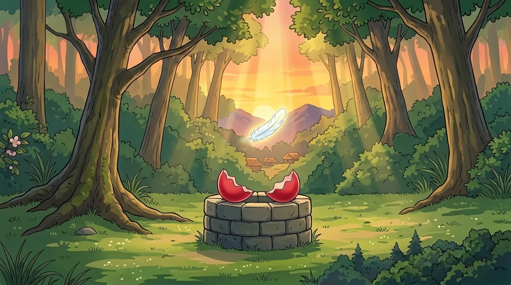
경주에 가면 혁거세가 나왔다는 우물 나정 자리가 남아 있습니다. 우물은 옛사람들에게 땅속과 하늘이 만나는 자리였습니다.
여섯 촌장은 저마다 제 마을이 제일이라 여길 수도 있었습니다. 그러나 하나로 묶이는 쪽을 먼저 바랐습니다. 나라가 선 것은 알에서 아이가 나왔기 때문이 아니라 사람들이 함께하기로 마음먹었기 때문입니다.
여러분은 여럿이 힘을 모아 무언가를 해낸 적이 있나요?
도깨비가 되는 물건에는 한 가지 공통점이 있습니다. 하나같이 사람이 손에 쥐고 오래 쓰던 것입니다. 새로 산 물건이 도깨비가 되었다는 이야기는 없습니다.
그래서 도깨비는 무섭기만 한 것이 아닙니다. 씨름을 걸고, 메밀묵을 좋아하고, 돈을 갚으러 오기도 합니다. 사람과 아주 가까운 자리에 있는 것입니다.
다시 보면 이 이야기에서 정말 무서운 것은 도깨비가 아니라 어둠입니다. 날이 밝고 나서 그 자리에 남아 있던 것을 보십시오. 밤에 본 것과 아침에 본 것이 같은 물건이었습니다.
밤에는 눈이 잘 보이지 않으니 머리가 대신 그림을 그립니다. 그 그림은 대개 우리가 무서워하는 것을 닮습니다. 옛사람들이 도깨비를 그렇게 자주 만난 데는 그런 까닭도 있었을 것입니다.
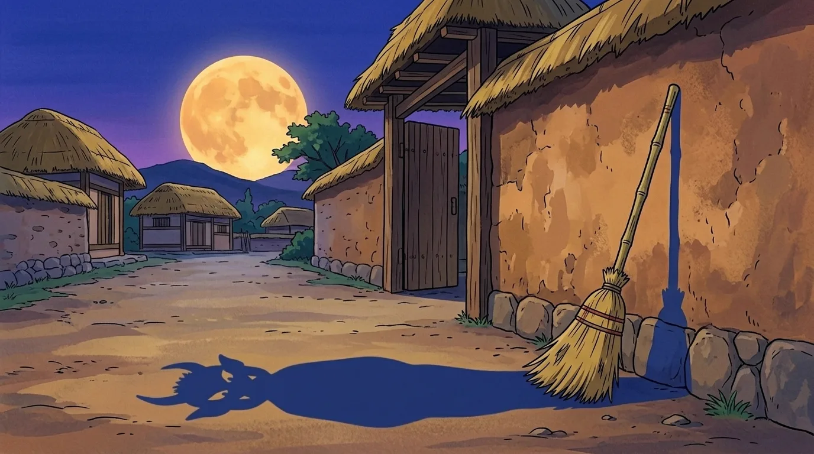
도깨비에게 씨름을 걸리면 왼쪽 다리를 걸어 넘기라는 말이 전해 옵니다. 도깨비는 오른쪽 다리가 없다는 것입니다. 이런 세세한 말이 붙어 다닌다는 것은 사람들이 그만큼 자주 이야기했다는 뜻입니다.
밤에는 낡은 빗자루도 뿔 달린 도깨비로 보입니다. 어두울 때 본 것은 날이 밝은 뒤에 다시 보면 달라 보이는 법입니다.
무섭게 느껴졌던 것이 알고 보니 아무것도 아니었던 적이 있나요?
이 이야기는 웃기려고 지은 이야기입니다. 우리 옛이야기에는 교훈을 주려는 것 못지않게 그저 웃자고 만든 것이 많습니다.
그런데 웃자고 만든 이야기가 오히려 그 시절을 잘 보여 줄 때가 있습니다. 이 이야기가 그렇습니다. 며느리가 시집에서 방귀조차 마음대로 뀔 수 없었다는 것부터가 그 시절 이야기입니다.
다시 보면 며느리는 아무 잘못도 하지 않았습니다. 참느라 얼굴이 노래질 때까지 참았습니다. 흠이 된 것은 방귀가 아니라 참으라고 한 쪽이었습니다.
그리고 그 방귀는 밖에 나가자마자 쓸모가 생겼습니다. 같은 재주가 안에서는 내쫓길 까닭이었다가 밖에서는 값을 받는 재주가 된 것이지요.
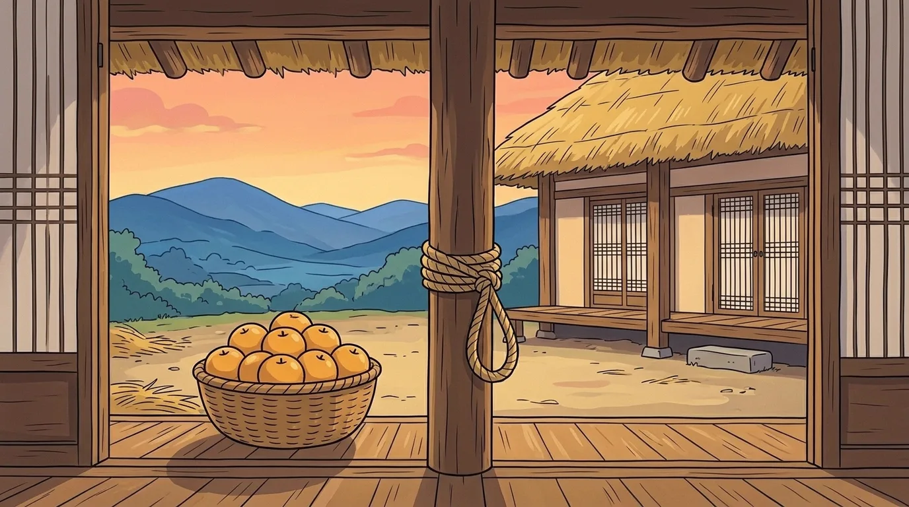
옛이야기에서 며느리는 대개 시달리는 쪽으로 나옵니다. 그런데 이 이야기에서는 며느리가 판을 뒤집습니다. 듣는 사람 가운데 며느리가 많았기 때문일 것입니다.
식구들이 흠이라 여겨 내보내려 한 것이, 밖에 나가 보니 누구도 못 하는 재주였습니다. 남과 다른 것을 흠으로 볼지 재주로 볼지는 보는 사람에게 달렸습니다.
남과 달라서 감추고 싶었던 것이 있나요? 그것이 쓸모 있는 자리는 어디일까요?
반쪽이는 우리 옛이야기 가운데서도 유난히 눈에 띄는 주인공입니다. 몸이 남과 다른 사람이 힘도 세고 꾀도 밝은 주인공으로 나오는 이야기는 흔치 않기 때문입니다.
이야기는 반쪽이를 한 번도 불쌍하게 그리지 않습니다. 형들이 놀려도, 사람들이 손가락질해도 반쪽이는 주눅 들지 않습니다. 호랑이를 잡아 오는 것도 반쪽이입니다.
다시 보면 이 이야기에서 잘못한 사람은 김 부자 하나입니다. 호랑이를 잡아 오면 딸을 주겠다고 먼저 말한 사람이 그 사람입니다. 잡아 오자 말을 바꾼 것도 그 사람이고요.
몸이 반쪽인 채로 태어난 아이가 씩씩하게 살아가는 이야기를 옛사람들이 지어 전했다는 것은 그 자체로 눈여겨볼 만한 일입니다.
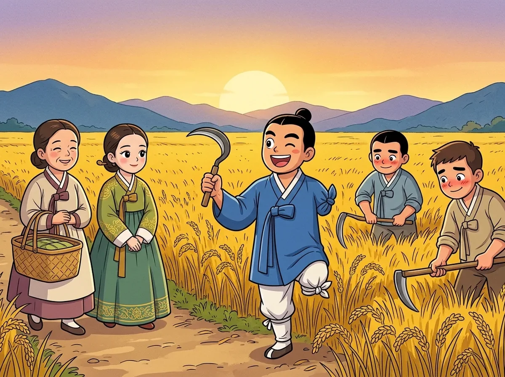
김 부자는 왜 약속을 지키지 않았을까요? 무엇이 그렇게 부끄러웠을까요.
김 부자는 호랑이를 잡은 사람을 찾다가, 막상 잡아 오자 그 사람의 생김새를 보았습니다. 약속을 지킬지 말지를 생김새로 정하는 것은 처음부터 약속이 아니었다는 뜻입니다.
겉모습만 보고 누군가를 잘못 판단한 적이 있나요?
이 이야기는 책이 아니라 노래로 전해 왔습니다. 사람이 죽었을 때 하는 굿에서 무당이 밤새 부르는 노래입니다. 그래서 이 노래를 부르는 사람들은 바리데기를 자기들의 조상으로 여깁니다.
지역마다 다릅니다. 바리공주라고도 하고, 부모가 임금이 아니라 여염집 사람인 데도 있습니다. 약수를 지키는 이와 혼인해 아들 일곱을 낳는 대목이 있는 책도 많습니다. 이 책은 그 대목을 빼고 아홉 해 일한 것만 남겼습니다.
다시 보면 바리데기는 부모에게 받은 것이 없습니다. 그런데도 갑니다. 받은 것이 많은 여섯 언니는 가지 않습니다. 이야기가 여섯을 나란히 세운 까닭이 거기 있습니다.
마지막 대목이 이 이야기의 뜻입니다. 나라의 반을 준다는데 바리데기는 죽은 이의 길잡이를 고릅니다. 버려져 본 사람이라서 안개 속에서 우는 이들을 그냥 지나치지 못한 것입니다.
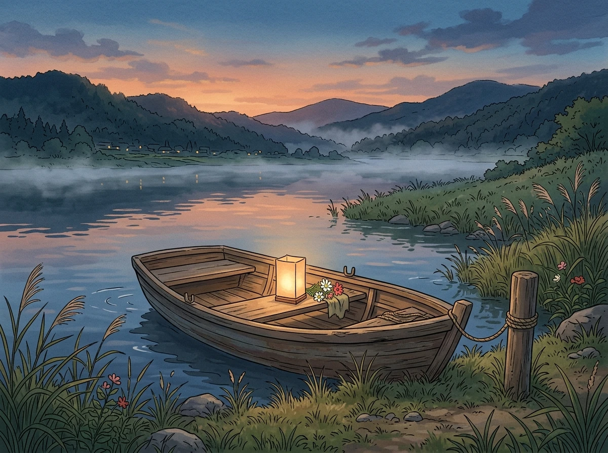
딸이라고 버린 이야기가 어떻게 여자를 신으로 모시는 이야기가 되었는지 생각해 볼 만합니다. 그 시절 사람들은 이 노래로, 버려지는 쪽이 끝내 모두를 건지는 세상을 이야기했습니다.
아무도 하지 않으려는 일을 내가 맡아 본 적이 있나요?
김선달이 실제로 있었던 사람인지는 아무도 모릅니다. 다만 조선 후기에 이런 재담꾼 이야기가 아주 많이 돌았습니다. 힘없는 사람이 말재주 하나로 힘 있는 사람을 골탕 먹이는 이야기입니다.
봉이라는 별명은 닭을 봉황이라 우겨 판 이야기에서 왔습니다. 사람들이 그 뒤로 그를 봉이라 불렀지요. 이름 자체가 속임수의 기록인 셈입니다.
다시 보면 김선달은 물을 판 것이 아닙니다. 물을 팔 수 있다고 믿는 마음을 판 것입니다. 상인들은 강물을 산 것이 아니라 강물에 임자가 있다는 생각을 산 것이지요.
그래서 이 이야기는 김선달이 똑똑한 이야기가 아니라 상인들이 무엇을 믿고 있었는지를 보여 주는 이야기입니다. 아무도 안 믿는 것은 팔 수가 없습니다.
이야기가 하필 평양을 고른 데는 까닭이 있습니다. 그 시절 평양은 청나라를 오가는 장사꾼이 몰리던 곳이었습니다. 돈으로 못 살 것이 없다고 여기는 사람이 가장 많던 자리였지요.
김선달이 노린 것은 상인들의 돈이 아니라 그 말이었습니다. 돈으로 못 살 게 없다는 말은, 돈으로 살 수 없는 것을 한 번도 생각해 보지 않아서 나오는 말입니다.
돈으로는 살 수 없는 것에 무엇이 있을까요?
개구리가 비 오는 날 크게 우는 것은 사실 짝을 찾는 소리입니다. 옛사람들은 그 까닭을 몰랐지만 소리는 똑똑히 들었습니다. 모르는 것을 그냥 두지 않고 이야기를 지어 붙인 것이지요.
이런 이야기가 우리 옛이야기에는 아주 많습니다. 넙치 눈이 한쪽으로 몰린 까닭, 까치 머리가 성긴 까닭, 호랑이가 토끼를 피하는 까닭. 눈에 보이는 것 하나에 이야기 하나씩을 붙여 둔 셈입니다.
다시 보면 청개구리는 거짓말을 한 적이 없습니다. 어머니를 미워한 적도 없습니다. 그저 하라는 것의 반대로 했을 뿐입니다. 그런데 그 버릇 하나가 마지막에 되돌릴 수 없는 일이 되었습니다.
어머니가 개울가에 묻어 달라고 한 것도 다시 보십시오. 어머니는 아들이 반대로 할 것을 알고 그렇게 말한 것입니다. 산에 묻히고 싶어서 개울가라고 한 것이지요.
그러니 이 이야기에서 가장 슬픈 대목은 어머니의 마지막 말이 처음으로 그대로 지켜졌다는 데 있습니다.
청개구리가 그때 산에 묻었다면 어땠을까요? 어머니 뜻을 따른 것일까요, 어긴 것일까요.
고맙다는 말도 미안하다는 말도 할 수 있을 때 해야 합니다. 청개구리는 어머니 말을 처음으로 따른 그날, 이미 어머니에게 그 말을 들려줄 수 없었습니다.
오늘 집에 가서 꼭 하고 싶은 말이 있나요?
단군 이야기가 글로 처음 적힌 것은 팔백 년쯤 전입니다. 일연 스님이 『삼국유사』에 적었고 비슷한 무렵 이승휴도 적었습니다. 그전까지는 입에서 입으로만 전해 온 것이지요.
곰과 호랑이가 먹은 것을 이 책에서는 쑥과 마늘이라 했습니다. 그런데 그 시절 이 땅에 마늘이 있었는지를 두고는 말이 갈립니다. 원래 글자를 달래나 다른 매운 풀로 읽어야 한다는 학자들도 있습니다.
다시 보면 곰은 아무 재주도 부리지 않았습니다. 그저 굴에 남아 있었을 뿐입니다. 이 이야기가 상을 준 것은 힘이나 재주가 아니라 견디는 일이었습니다.
환웅이 사람들에게 가르친 것을 세어 보십시오. 곡식과 약과 옳고 그름입니다. 힘으로 다스린 것이 아니라 살아가는 법을 일러 준 것입니다. 널리 사람을 이롭게 하라는 말이 그 뜻입니다.
고조선을 세웠다는 그날을 기려 시월 삼일을 개천절로 삼았습니다. 하늘이 열린 날이라는 뜻입니다.
호랑이는 왜 굴을 뛰쳐나갔을까요? 하루만 더 참으면 되는 날도 있었을 텐데요.
호랑이는 첫날 가장 자신 있어 했고 곰은 아무 말 없이 앉아 있었습니다. 끝까지 남는 쪽은 큰소리치던 쪽이 아니라 조용히 견디던 쪽인 경우가 많습니다.
당장은 재미없어도 오래 해 볼 만한 일이 나에게도 있을까요?
진짜와 가짜가 나타나 서로 자기가 진짜라고 다투는 이야기를 진가쟁주 이야기라고 합니다. 우리나라에 여러 갈래가 전해 오는데, 이 손톱 이야기가 가장 널리 알려진 것입니다.
손톱을 아무 데나 흩뿌리지 말라는 말은 옛날에 실제로 지키던 금기였습니다. 손톱과 머리카락은 몸에서 떨어져 나와도 그 사람의 일부라고 여겼기 때문이지요. 물론 지금은 잘 모아서 쓰레기통에 버리면 그만입니다.
다시 보면 이 이야기가 묻고 있는 것은 하나뿐입니다. 나를 나이게 하는 것은 무엇인가.
그리고 그 답이 뜻밖입니다. 아는 것도 아니고 생김새도 아니었습니다. 사람이 아니라 짐승이 알아보았지요. 머리로 가리지 못한 것을 코가 가려낸 것입니다.
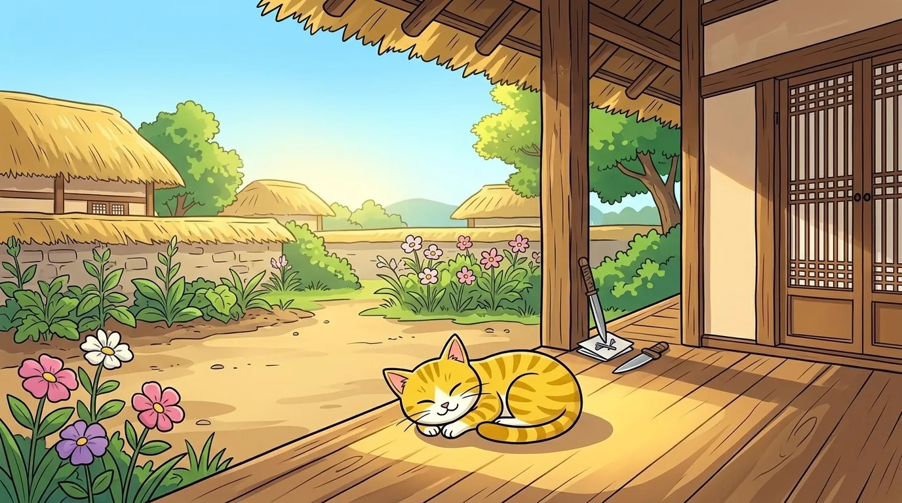
옹고집 이야기도 같은 갈래입니다. 그쪽은 짚으로 만든 가짜가 나오고 스님이 벌을 거둡니다. 뼈대가 같은 이야기가 옷을 갈아입고 여러 벌 전해 오는 것이지요.
가짜가 진짜보다 더 그럴듯하게 대답할 때가 있습니다. 그럴 때 진짜를 알아본 것은 말이 아니라 냄새였습니다. 사람의 눈이 속을 때에도 알아보는 다른 길이 남아 있습니다.
그럴듯한 말과 진짜를 어떻게 가려낼 수 있을까요?
착한 아우와 욕심 많은 형이 같은 곳에 가서 다른 것을 얻어 오는 이야기는 우리 옛이야기의 큰 틀 가운데 하나입니다. 흥부와 놀부도 같은 틀입니다.
여기서 열쇠는 개암입니다. 산에서 절로 나는 작은 열매인데 껍질이 단단해서 깨물면 딱 소리가 크게 납니다. 도깨비들이 그 소리를 집 무너지는 소리로 들은 것이지요.
다시 보면 아우는 도깨비를 속일 마음이 조금도 없었습니다. 배가 고파서 개암을 깨문 것뿐입니다. 얻은 것이 크지만 노린 것은 아무것도 없었습니다.
형은 반대입니다. 개암을 자루로 주웠고, 깨물 때를 재고, 방망이를 어떻게 받을지까지 미리 정해 두었습니다. 그런데 도깨비들은 두 번째에는 속지 않았습니다.
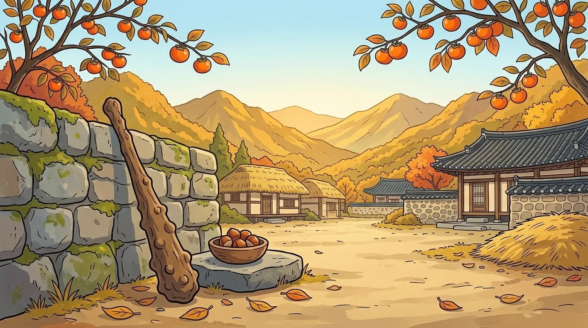
이야기가 두 사람을 갈라 놓은 자리는 재주가 아니라 무엇을 바라고 갔는가였습니다.
아우는 개암 네 알을 주우면서 세 알을 남에게 줄 생각부터 했습니다. 형은 자루 가득 주우면서도 제 몫만 생각했습니다. 같은 산에서 같은 것을 주웠는데 손에 남은 것이 달랐습니다.
좋은 것이 생겼을 때 나는 누구를 먼저 떠올리나요?
우리 이야기가 하필 감투를 고른 것이 눈여겨볼 만합니다. 감투는 벼슬아치가 쓰던 것입니다. 감투를 쓴다는 말이 지금도 자리를 얻는다는 뜻으로 쓰이지요.
그런데 그런 이야기의 끝은 대개 비슷합니다. 안 보이는 힘을 얻은 사람은 오래 버티지 못합니다. 그 힘이 사람을 시험하기 때문입니다.
이야기가 감투에 하필 빨간 헝겊을 대게 한 것도 그래서입니다. 눈에 보이지 않던 것을 눈에 보이게 만든 것이지요.
마지막에 도깨비가 화를 내지 않은 것도 눈여겨볼 만합니다. 감투를 잃고 보이는 몸으로 지내 보니 그것도 살 만하더라는 것이지요.
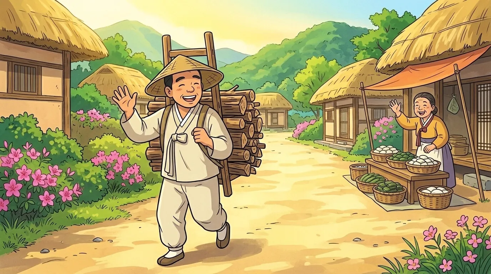
돌쇠를 붙잡은 것은 빨간 헝겊이 아니었습니다. 아무도 보지 않는다고 여기는 동안에도 돌쇠 자신은 다 보고 있었습니다. 그래서 곳간이 차오를수록 마음이 무거워졌습니다.
아무도 보지 않을 때 나는 어떤 사람인가요?
느린 쪽이 빠른 쪽을 이기는 이야기는 세계 어디에나 있습니다. 다만 대개는 빠른 쪽이 잠을 자거나 방심해서 집니다.
그런데 이 이야기는 그것들과 한 군데가 다릅니다. 토끼와 거북에서는 토끼가 잠을 잡니다. 빠른 쪽이 실수를 해야 느린 쪽이 이기는 것이지요.
다시 보십시오. 둘은 시루를 보고 달렸고 두꺼비는 땅을 보며 걸었습니다. 굴러가는 시루에서 떡이 흘렀다는 것을 안 것은 땅을 본 쪽뿐이었습니다.
무엇을 얻느냐는 얼마나 빠른가보다 어디를 보고 있는가에 달릴 때가 있습니다.
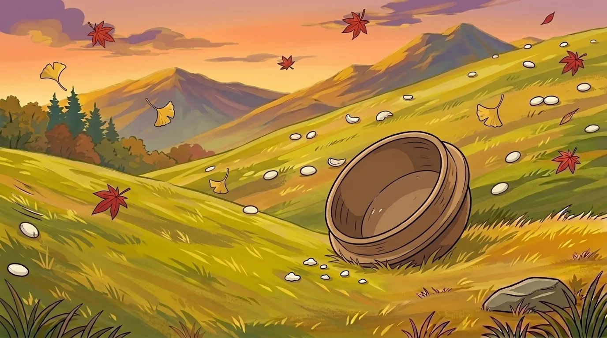
빨리 가는 것보다 어디에 무엇이 떨어지는지 보는 눈이 나을 때가 있습니다. 호랑이와 토끼는 시루만 보고 달렸고 두꺼비는 길을 보며 걸었습니다.
서두르다가 정작 중요한 것을 놓친 적이 있나요?
짐승을 길러 준 사람이 뒷날 그 짐승에게 도움을 받는 이야기를 보은 이야기라고 합니다. 우리 옛이야기에서 가장 자주 나오는 틀 가운데 하나입니다.
이 이야기에는 그것 말고 또 하나가 겹쳐 있습니다. 마을이 해마다 사람을 바치던 대목입니다. 무서운 것을 달래려고 사람을 내주는 이야기는 세계 곳곳에 있습니다.
그런 이야기에서 사람을 구하는 것은 대개 힘센 장수입니다. 그런데 여기서는 소녀가 밥을 나눠 준 두꺼비가 옵니다.
이 이야기가 마을을 구한 것으로 끝나지 않고 그 뒤 소녀가 어떻게 살았는지까지 말해 주는 것도 눈여겨볼 만합니다.
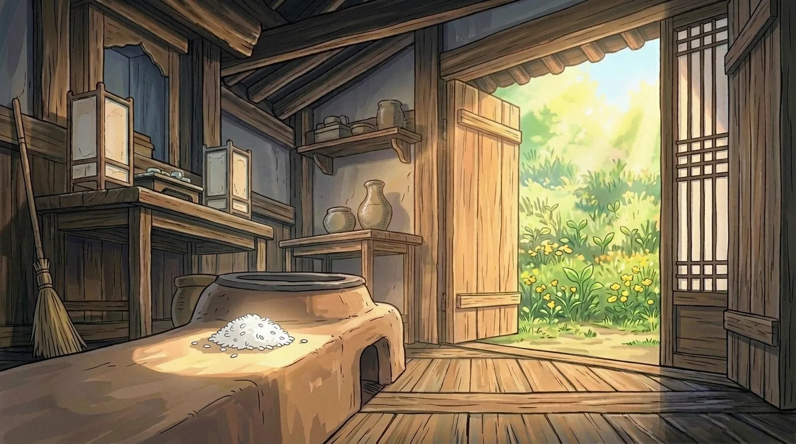
두꺼비는 왜 소녀를 도왔을까요? 밥 때문일까요, 다른 무엇 때문일까요.
소녀가 두꺼비에게 나눠 준 것은 남은 밥이 아니라 제 몫의 밥이었습니다. 넉넉해서 준 것이 아니라 모자란데도 나눈 것입니다. 그 마음이 여러 해 뒤에 소녀를 지켜 주었습니다.
넉넉하지 않을 때에도 나눠 본 적이 있나요?
옛사람들은 이렇게 이야기를 땅에 붙여 두었습니다. 산 이름 하나만 남아 있어도 그 이야기가 함께 남기 때문입니다. 치악산은 그렇게 오늘까지 이 이야기를 지고 있습니다.
그래서 이 이야기는 책마다 새가 다릅니다. 까치로 전하는 이야기도 있고 꿩으로 전하는 이야기도 있습니다. 산 이름을 따라가면 꿩 쪽이 먼저였을 것입니다.
종을 울린 새들도 갚음을 셈하지 않았습니다. 셈을 했다면 그 방법을 고르지 않았을 것입니다.
산에 이름을 남긴 이야기입니다. 옛사람들은 이렇게 이야기를 땅에 붙여 두었습니다. 그러면 그 땅이 있는 한 이야기도 남습니다.
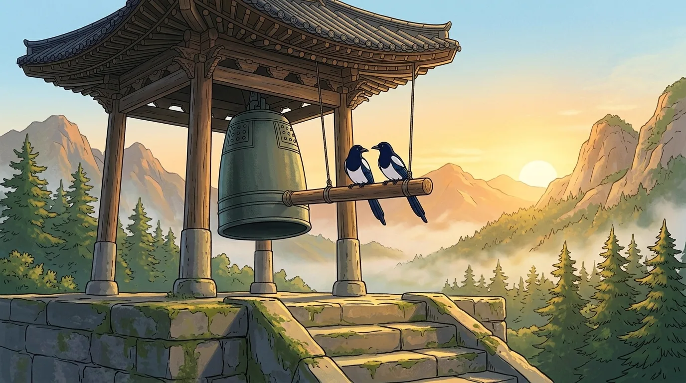
베푼 마음은 어디로든 돌아옵니다. 선비는 아무 대가도 바라지 않고 까치를 구했는데, 그날 밤 목숨을 구한 것은 선비였습니다.
누군가에게 아무 대가 없이 도움을 준 적이 있나요?
주인을 구한 개 이야기는 우리나라에 아주 많습니다. 그런 개를 의로운 개라 하여 의견이라 불렀고, 무덤을 만들어 주고 비석까지 세운 곳도 있습니다.
전라북도 임실에는 오수라는 곳이 있는데, 마을 이름 자체가 개를 기린 데서 왔다고 전해 옵니다. 그곳에는 지금도 개를 기리는 비석이 서 있습니다.
그때 장수는 무엇을 바라고 데려온 것이 아닙니다. 그러니 이 이야기는 갚음을 받은 이야기가 아니라, 그날의 일이 어디까지 갔는지를 보여 주는 이야기입니다.
말을 못 하는 짐승이 사람을 구하는 이야기가 이토록 많이 남은 것은, 사람들이 그 곁을 오래 지켜보았다는 뜻이기도 합니다.
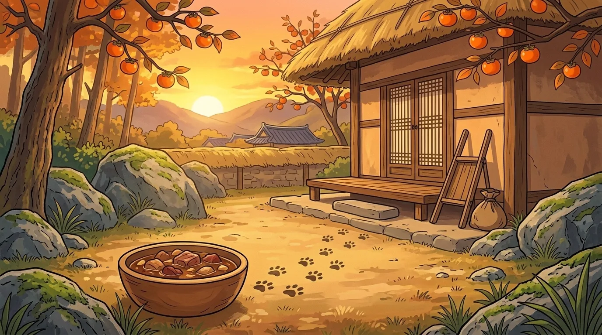
바둑이는 눈 오는 날 길가에서 구해진 개였습니다. 그때 장수가 그냥 지나쳤다면 이날의 일도 없었을 것입니다. 베푼 마음은 잊고 지내도 어딘가에 남아 있습니다.
내가 무심코 베푼 친절이 누군가에게 크게 남은 적이 있을까요?
이 이야기의 뿌리는 우리 것이 아닙니다. 이천 년도 더 전에 그리스에서 이솝이 모은 이야기 가운데 똑같은 것이 있습니다. 그쪽에서는 산신령 자리에 헤르메스라는 신이 나옵니다.
그 이야기가 아주 오랜 세월에 걸쳐 여러 나라를 건너오면서 신이 산신령으로 바뀌고, 강이 연못으로 바뀌었습니다. 이야기는 이렇게 옮겨 다니며 그 땅의 옷으로 갈아입습니다.
욕심쟁이가 잃은 것도 다시 보십시오. 금도끼를 못 얻은 것이 아니라 제 쇠도끼마저 잃었습니다. 얻으러 갔다가 있던 것을 놓친 것이지요.
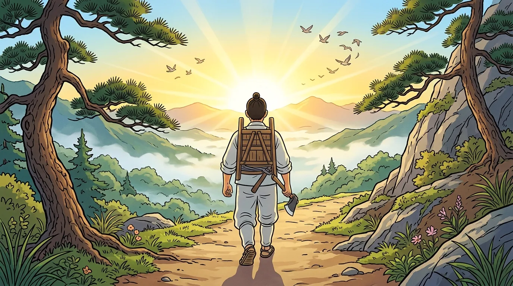
나무꾼이 금도끼를 마다한 것은 욕심이 없어서가 아니었습니다. 가난한 사람에게 금도끼가 왜 탐나지 않았겠습니까. 다만 제 것이 아닌 것을 제 것이라 말할 수가 없었을 뿐입니다.
내 것이 아닌 줄 알면서 갖고 싶었던 것이 있나요?
우리 옛이야기에는 팔 수 없는 것을 판 사람 이야기가 여럿 있습니다. 대동강 물을 팔았다는 봉이 김선달이 가장 이름났지요. 다만 이 이야기는 방향이 반대입니다. 김선달은 남의 것을 팔아넘겼고, 여기서는 부자가 제 것을 스스로 팔았습니다.
다시 보면 부자가 판 것은 그늘이 아니었습니다. 그늘은 해를 따라 하루 종일 움직입니다. 아침에는 마당에 있다가 저녁에는 안방까지 들어옵니다.
그러니 그늘을 판다는 것은 집을 조금씩 파는 일이었습니다. 부자는 그 셈을 하지 않고 그날 손에 쥔 돈만 보았습니다.
나그네는 억지를 부린 적이 없습니다. 산 것을 그대로 썼을 뿐입니다. 잘못은 팔지 못할 것을 판 쪽에 있었습니다.
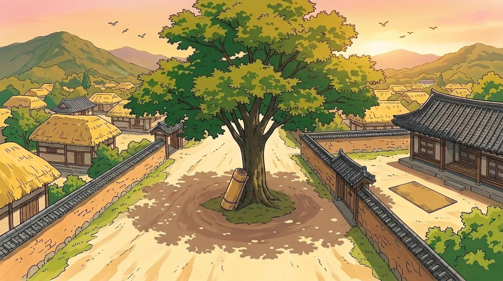
부자는 그늘을 팔아 돈을 벌었다고 여겼습니다. 그런데 판 것은 그늘이 아니라 제 집 마당이었습니다. 값을 매길 수 없는 것에 값을 붙이면 잃는 쪽은 대개 값을 붙인 사람입니다.
돈으로 사고팔 수 없는 것에 무엇이 있을까요?
곶감은 감을 깎아 말린 것입니다. 옛날에는 겨울에 먹을 수 있는 가장 단 것이었습니다. 우는 아이에게 마지막으로 내밀던 것이 곶감이었지요.
그러니 아이가 곶감이라는 말에 울음을 뚝 그친 것은 이상한 일이 아닙니다. 호랑이 이야기에도 안 그치던 울음이 그친 것이 이상했던 것은 호랑이뿐입니다.
다시 보면 호랑이는 아무것도 확인하지 않았습니다. 곶감이 무엇인지 물어본 적도, 들여다본 적도 없습니다. 저보다 무서운 것이라고 혼자 정해 버렸지요.
소도둑도 마찬가지입니다. 제가 올라탄 것이 무엇인지 보지 않고 소라고 여겼습니다. 둘 다 보지 않고 무서워한 것입니다.
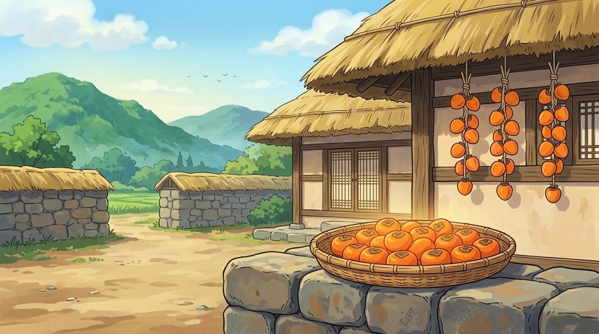
그래서 이 이야기에서 아무 일도 하지 않은 쪽은 곶감입니다. 곶감은 그저 광에 걸려 있었을 뿐입니다.
잘 모르는 것을 지레짐작으로 무서워하면 엉뚱한 일이 벌어집니다. 알아보지도 않고 겁부터 먹으면, 아무것도 아닌 것이 세상에서 제일 무서운 것이 됩니다.
잘 모르면서 미리 겁먹었다가 알고 보니 별것 아니었던 일이 있나요?
흉하게 생긴 신랑이 알고 보니 아주 귀한 사람이었다는 이야기는 세계 곳곳에 있습니다. 서양의 미녀와 야수도 같은 갈래이고, 더 거슬러 가면 그리스의 옛이야기까지 닿습니다.
그런 이야기들의 뒷부분도 서로 닮았습니다. 금기가 깨져 신랑을 잃고, 신부가 먼 길을 떠나 되찾아 옵니다. 되찾으러 가는 쪽은 늘 신부입니다.
금기는 허물을 태우지 말라는 것이었습니다. 허물은 벗어 놓은 껍질인데 옛사람들은 그것을 함부로 하면 안 되는 것으로 여겼습니다.
허물을 태운 것이 언니들이었다는 것도 눈여겨볼 만합니다. 흉하다고 한 쪽이 끝내 그것을 없애려 했습니다.
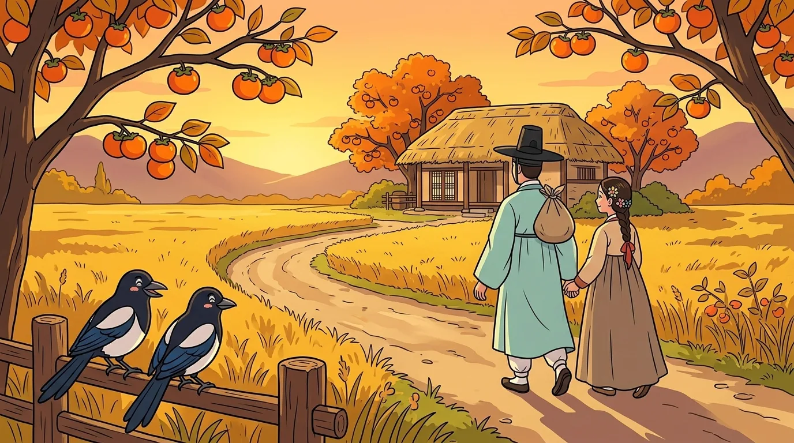
언니들은 허물이 흉하다고 침을 뱉었고 셋째는 그것을 구렁덩덩 신선비라고 불러 주었습니다. 같은 것을 보고도 무어라 부르느냐에 따라 그 뒤가 달라졌습니다. 부르는 말에는 그런 힘이 있습니다.
남이 흉하다고 한 것을 나는 다르게 본 적이 있나요?
두 별 사이는 실제로 아주 멉니다. 빛으로 달려도 열여섯 해가 걸리는 거리입니다. 옛사람들은 그 거리를 몰랐지만 은하수를 사이에 두고 떨어져 있다는 것만은 눈으로 보았습니다.
그 별들이 일 년에 한 번 가장 가까워 보이는 때가 음력 칠월 칠일 무렵입니다. 그래서 그날을 칠석이라 하고 이 이야기를 붙여 두었습니다.
그래서 벌도 일과 이어져 있습니다. 소를 몰던 사람과 베를 짜던 사람을 각자 제자리로 돌려보낸 것이지요.
칠석 무렵에 비가 오면 두 사람이 만나 흘리는 눈물이라 했습니다. 실제로 그때가 우리나라 장마 끝 무렵입니다.
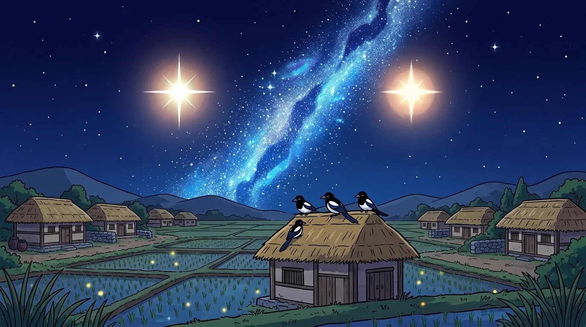
옥황상제가 두 사람을 갈라놓은 것은 서로를 좋아했기 때문이 아니라, 좋아하느라 제 몫의 일을 놓았기 때문입니다. 아끼는 마음과 해야 할 일은 둘 다 지켜야 하는 것입니다.
좋아하는 일에 빠져 해야 할 일을 놓친 적이 있나요?
이야기 하나가 이렇게 여러 몫을 하는 것은 흔한 일이 아닙니다. 하늘에 걸린 것을 설명하고, 들에 자란 것을 설명하고, 그러면서 문 앞에서 무엇을 조심해야 하는지까지 일러 줍니다.
수수깡이 붉은 것은 정말입니다. 다만 호랑이 피가 묻어서는 아닙니다. 수수 줄기에는 붉은 물이 드는 성분이 들어 있어서 익어 갈수록 저절로 붉어집니다. 가을 들판에서 수수를 보면 이 이야기가 왜 하필 수수밭을 골랐는지 알 수 있습니다.
짐승이 사람 흉내를 내며 문을 열게 하려는 이야기는 세계에 널리 있습니다. 서양의 늑대와 일곱 마리 아기 염소가 그렇고, 빨간 모자도 그렇습니다.
그런 이야기의 가르침은 늘 같습니다. 문 앞에서 목소리만 믿지 말라는 것입니다.
마지막에 오빠가 자리를 바꿔 준 대목도 다시 보십시오. 밤이 무섭다는 말 한마디에 제 몫을 내준 것입니다.
오누이를 살린 것은 힘이 아니었습니다. 어머니 목소리가 이상하다고 느꼈을 때 그냥 넘기지 않은 것, 손을 보여 달라고 한 번 더 물어본 것이었습니다. 이상하다는 마음이 들면 그것부터 확인해 보는 것이 안전합니다.
무언가 이상하다고 느꼈는데 그냥 넘어간 적이 있나요?
할미꽃은 실제로 있는 꽃입니다. 이른 봄에 피는데 꽃이 아래로 폭 숙여 고개를 들지 않습니다. 꽃이 지고 나면 흰 털이 부수수 남습니다.
그 모습이 허리 굽은 할머니의 흰머리 같다고 하여 할미꽃이라 불렀습니다. 이 이야기는 그 이름과 그 모양을 함께 풀어 주는 이야기입니다.
이야기는 두 딸을 나무라지 않습니다. 다만 할머니가 어느 집 문 앞까지 갔다가 돌아섰는지를 조용히 적어 둘 뿐입니다.
무덤가에 피는 꽃이라는 말도 함께 전해 옵니다. 그래서 이 꽃을 보면 이 이야기가 따라옵니다.
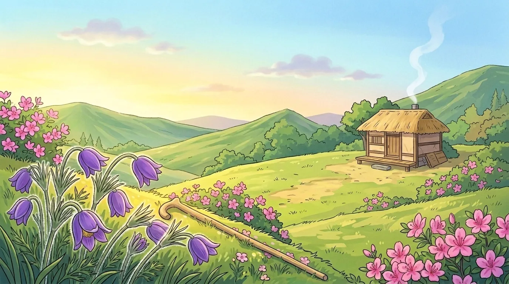
어머니는 세 딸을 똑같이 키웠지만 언덕을 찾아와 준 것은 한 사람이었습니다. 받은 것을 기억하는 마음은 저절로 생기지 않습니다.
나를 키워 준 사람에게 오늘 무엇을 해 드릴 수 있을까요?
이 이야기는 우리나라에도 있고 일본에도 있습니다. 일본 쪽에서는 도깨비 자리에 오니라는 것이 나옵니다. 어느 쪽이 먼저인지는 아직 밝혀지지 않았습니다.
우리 도깨비는 노래와 춤을 좋아합니다. 씨름도 좋아하고 메밀묵도 좋아합니다. 무섭기만 한 것이 아니라 사람과 어울리기를 좋아하는 것들이지요.
다시 보면 첫 번째 영감은 도깨비를 만나러 간 것이 아닙니다. 날이 저물어 빈 오두막에 들었다가 무서워서 노래를 부른 것입니다.
도깨비들이 화가 난 것도 노래가 나빠서가 아닙니다. 속았다는 것을 알았기 때문입니다.
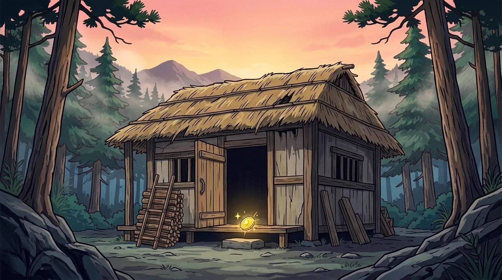
첫 번째 영감은 노래가 좋아서 불렀고 두 번째 영감은 보물이 탐나서 불렀습니다. 같은 자리에서 같은 일을 해도 마음이 다르면 끝이 달라집니다.
무언가를 할 때 나는 어떤 마음으로 시작하고 있나요?
호랑이가 사람과 말을 주고받는 이야기는 우리 옛이야기에 유난히 많습니다. 산이 많은 땅에서 호랑이가 가장 가깝고도 무서운 이웃이었기 때문입니다.
그래서 호랑이는 우리 이야기에서 늘 나쁜 쪽이 아닙니다. 속기도 하고 은혜를 갚기도 하고 이렇게 형님 소리를 듣고 마음이 풀리기도 합니다.
호랑이가 넘어간 것은 꾀가 아니라 형님이라는 말이었습니다. 산에서 혼자 살던 것에게 그 말이 어떻게 들렸을지 생각해 보십시오.
그 뒤로 호랑이가 어머니 상에 짐승을 물어다 놓았다는 대목도 다시 보십시오. 거짓말로 얻은 이름을 진짜로 만든 쪽은 호랑이였습니다.
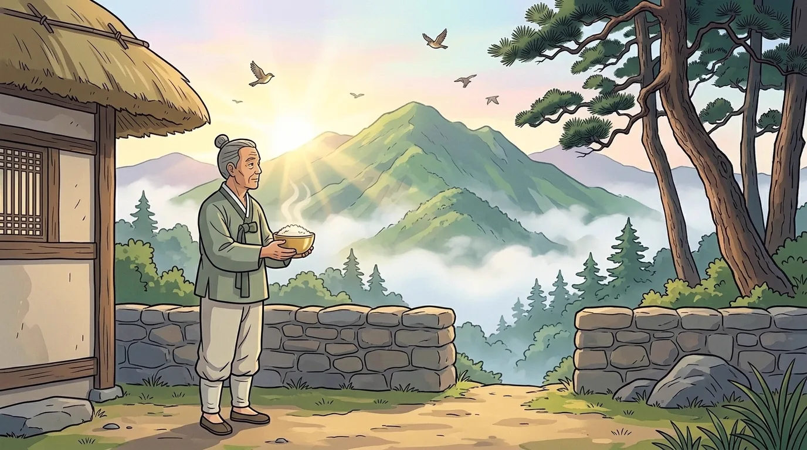
나무꾼은 살아 보려고 거짓말을 했고, 호랑이는 그것이 거짓말인 줄 알면서도 형님 소리가 좋아 모른 척했습니다. 사람이 정말로 굶주리는 것은 먹을 것보다 불러 주는 이름일 때가 있습니다.
누군가 나를 불러 주어서 기뻤던 이름이 있나요?
작고 약한 것이 크고 센 것을 꾀로 이기는 이야기는 세계 어디에나 있습니다. 우리에게는 그 자리가 대개 토끼입니다. 토끼전의 토끼도 같은 토끼이지요.
그런데 이 이야기의 토끼는 한 번도 거짓말을 지어내지 않습니다. 참새를 잡아 준다고 하고, 물고기를 잡아 준다고 합니다. 다 호랑이가 원하던 것입니다.
다시 보면 호랑이가 속은 까닭은 토끼가 똑똑해서가 아닙니다. 배가 고팠기 때문입니다. 듣고 싶은 말이 있는 쪽은 그 말을 그냥 믿어 버립니다.
그래서 이 이야기가 겨눈 것은 토끼의 꾀가 아니라 호랑이의 마음입니다. 급하고 바라는 것이 있을 때 사람은 확인을 건너뜁니다.
마지막에 호랑이가 토끼를 피해 다녔다는 대목도 웃어넘길 것이 아닙니다. 힘으로는 이길 수 있는데도 피한 것입니다.
힘이 세다고 늘 이기는 것은 아닙니다. 토끼는 한 번도 힘으로 맞서지 않았습니다. 그저 호랑이가 듣고 싶어 하는 말을 했을 뿐입니다.
누군가 달콤한 말로 다가올 때 무엇을 먼저 살펴봐야 할까요?
사람이 짐승으로 바뀌었다가 되돌아오는 이야기는 아주 오래된 틀입니다. 그리스에도 있고 중국에도 있습니다. 대개 벌로 바뀌었다가 무언가를 깨닫고 돌아옵니다.
우리 이야기에서 하필 소가 된 데는 까닭이 있습니다. 소는 그 시절 가장 고되게 일하던 것이었습니다. 일하기 싫어한 사람을 가장 일 많이 하는 것으로 만든 것이지요.
다시 보면 농부는 게으른 사람이라기보다 일이 무엇인지 몰랐던 사람입니다. 소가 되고 나서야 자기 밭을 갈던 것이 어떤 일이었는지 알게 됩니다.
그래서 마지막에 밭으로 달려간 것은 벌이 무서워서가 아닙니다. 그동안 남이 대신 해 주던 일을 처음으로 제 일로 본 것입니다.
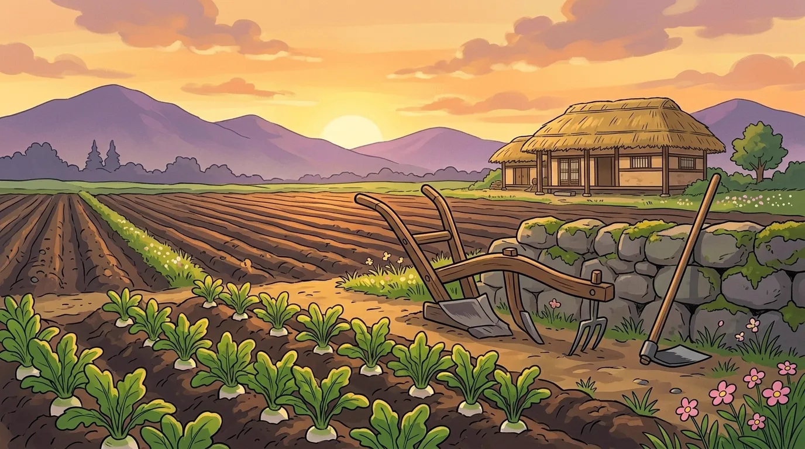
소가 흘린 눈물 이야기도 눈여겨볼 만합니다. 사람이던 시절에는 한 번도 울지 않던 사람입니다.
일을 피하려다 더 힘든 일을 만나기도 합니다. 농부는 평생 일하지 않으려다 도리어 소가 되어 죽도록 일했습니다.
하기 싫어 미뤄 두었다가 더 힘들어진 일이 있나요?
그리스에서는 갈대가 말을 옮기는데 우리 이야기에서는 대나무입니다. 이야기가 나라를 건너면 그 땅에 흔한 것으로 바뀝니다. 우리 땅에는 갈대보다 대나무가 가까웠던 것이지요.
우리 쪽 기록은 『삼국유사』에 있습니다. 신라 제48대 경문왕 이야기로 실려 있지요. 도림사라는 절 이름까지 그대로 적혀 있습니다.
다시 보면 임금이 두려워한 것은 귀가 아니라 소문이었습니다. 그래서 대나무를 베었습니다. 그랬더니 산수유가 대신 소리를 냈습니다.
감추려 한 것이 아니라 감추려 한 일 자체가 소문을 키웠습니다. 소리를 없애려고 벤 것이 소리를 한 번 더 낸 셈이지요.
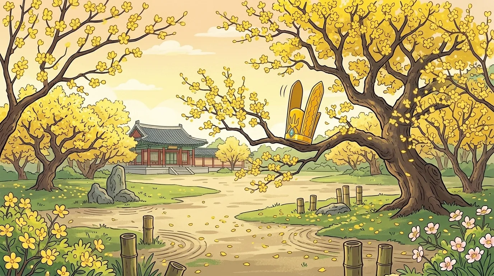
마지막에 임금이 웃으며 그것을 받아들이자 아무 일도 아니게 되었습니다. 그 순간 소문이 갈 곳을 잃은 것입니다.
임금은 대나무를 베어 소리를 없애려 했지만 소리는 산수유에서 다시 났습니다. 감추려 할수록 커지던 일이 인정하는 순간 아무것도 아닌 일이 되었습니다.
남에게 감추고 싶은 것이 있나요? 그것을 그냥 인정하면 어떻게 될까요?
이 이야기는 이야기에 대한 이야기입니다. 옛이야기 가운데 이런 것은 흔치 않습니다. 이야기를 하는 사람들이 스스로를 두고 지은 셈이지요.
옛날에는 이야기가 책에 있지 않고 사람에게 있었습니다. 겨울밤에 한 사람이 풀어놓으면 듣던 사람이 다음 마을에서 다시 풀어놓았습니다. 그렇게 살아 움직이던 것입니다.
다시 보면 도련님은 이야기를 아낀 것이 아닙니다. 가둔 것입니다. 들은 것을 하나도 내놓지 않고 주머니에 넣어 벽에 걸어 두었습니다.
그러니 주머니 속에서 이야기들이 성이 난 것은 이야기가 원래 그런 것이기 때문입니다. 이야기는 옮겨 다녀야 삽니다.
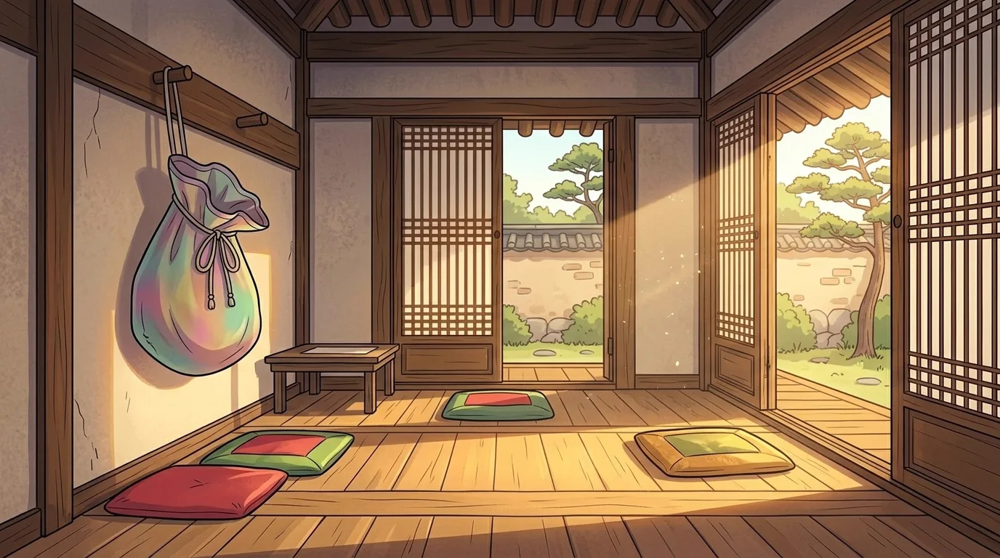
여러분이 지금 읽고 있는 이 책의 이야기들도 누군가가 입으로 옮겨 준 덕분에 여기까지 왔습니다.
이야기는 손에 쥐고 있으면 썩고 남에게 건네면 살아납니다. 도련님이 십 년 동안 모은 것은 이야기가 아니라 답답함이었던 셈입니다.
혼자만 알고 있는 좋은 것을 누군가에게 나눠 준 적이 있나요?
이 이야기는 원래 판소리 「장끼타령」이었습니다. 판소리 열두 마당 가운데 소리가 끊긴 일곱 마당의 하나로, 옹고집전과 같은 처지입니다. 글로만 읽을 수 있습니다.
꿩이 사람처럼 말하고 혼인하고 다툽니다. 이런 이야기를 우화라고 합니다. 옛사람들은 사람에게 대놓고 하기 어려운 말을 짐승의 입을 빌려 했습니다.
장끼가 까투리에게 한 「아녀자가 무얼 안다고」는 그 시절 남자들이 흔히 하던 말입니다. 이야기는 그 말을 한 장끼를 덫에 걸리게 합니다. 누구 편인지 분명합니다.
장끼의 마지막 말도 그렇습니다. 그때는 남편을 잃은 여자가 다시 혼인하는 것을 나쁘게 보았습니다. 까투리는 그 말을 따르지 않았습니다. 이 책은 까투리가 스스로 고르는 쪽으로 끝냈습니다.
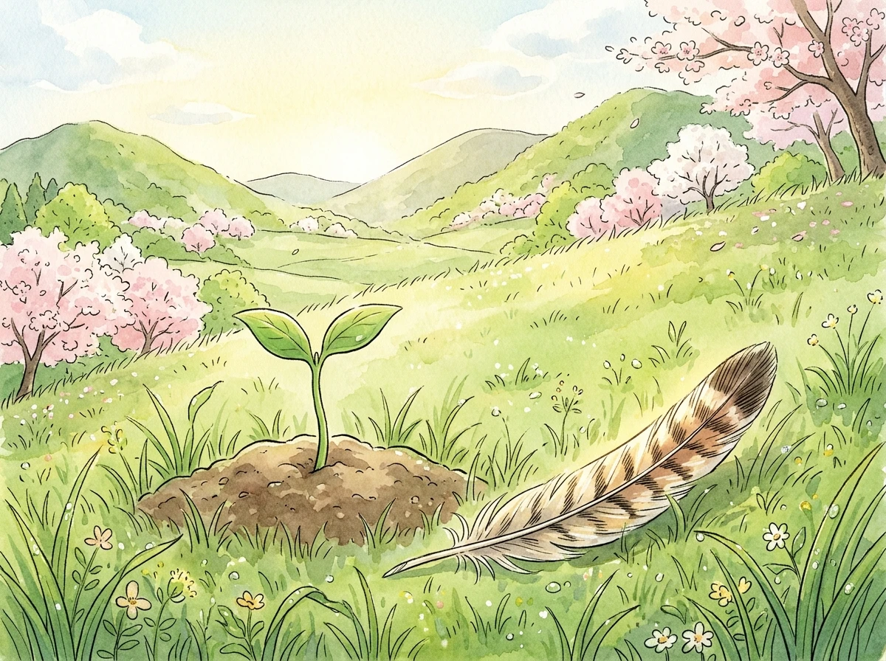
그러니 이것은 꿩 이야기가 아닙니다. 남의 말을 듣지 않은 사람과, 남이 정해 준 대로 살지 않은 사람의 이야기입니다. 콩 한 알이 그 둘을 다 보여 줍니다.
누군가의 말을 흘려듣다 낭패를 본 적이 있나요? 반대로 남이 정해 준 것 대신 내 뜻대로 골라 본 적은요?
자린고비는 한 사람의 이름이 아니라 지독한 구두쇠를 가리키던 말입니다. 충청도 쪽에서 나온 말로 전해 오는데, 어디서 왔는지는 말이 여러 가지입니다.
굴비를 천장에 매달아 두고 쳐다보며 밥을 먹었다는 대목은 이 이야기에서 가장 이름난 자리입니다. 너무 여러 번 봤다고 나무라는 대목까지가 한 짝입니다.
다시 보면 이야기는 자린고비를 웃음거리로만 두지 않습니다. 흉년이 들었을 때 곳간을 여는 데까지 데려갑니다.
그때 나온 쌀은 하늘에서 떨어진 것이 아닙니다. 굴비를 매달아 놓고 아끼던 그 세월이 쌓인 것입니다.
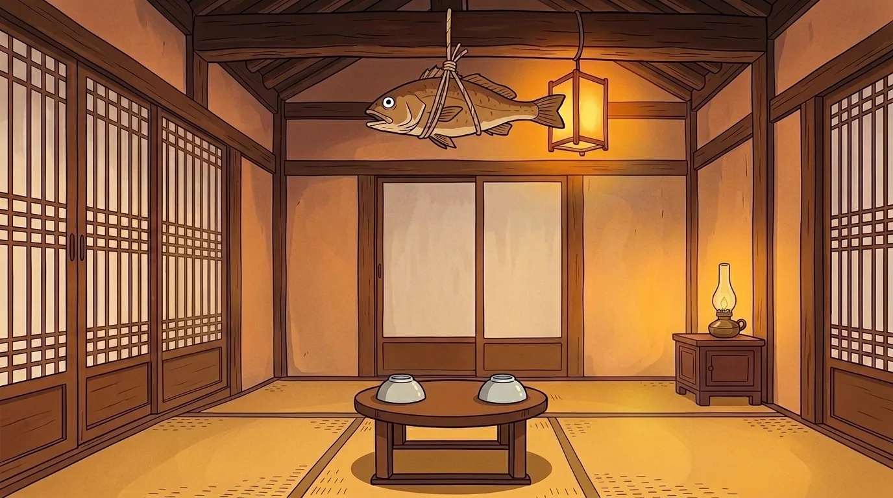
자린고비는 아끼는 것이 목적인 사람이 아니었습니다. 아낀 것을 언제 써야 하는지 알고 있던 사람이었습니다. 무엇을 아끼느냐보다 무엇을 위해 아끼느냐가 그 사람을 말해 줍니다.
나는 무엇을 아끼고 있나요? 그것을 언제 쓰려고 아끼는 걸까요?
늙은 부모를 산에 버리는 이야기는 우리나라에도 있고 일본과 중국에도 있습니다. 아주 널리 퍼진 이야기 틀입니다.
그런 이야기들의 끝은 대개 같습니다. 버리러 간 사람이 무언가를 보고 되돌아옵니다. 버리는 이야기가 아니라 되돌아오는 이야기인 것이지요.
지게를 도로 가져오라고 한 아이의 말이 이 이야기에서 가장 무서운 대목입니다.
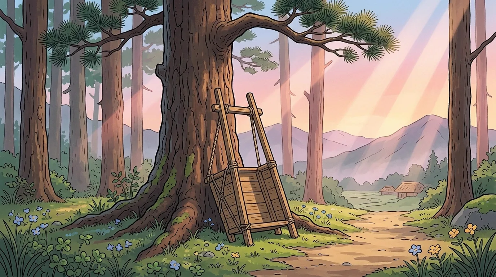
아이는 나쁜 말을 한 것이 아니라 본 대로 말했을 뿐입니다. 어른이 하는 일은 그대로 아이에게 옮겨 갑니다. 그날 아들을 되돌려 세운 것은 꾸중이 아니라 제 아이의 한마디였습니다.
내가 하는 행동을 누군가 보고 그대로 따라 한다면 어떤 모습일까요?
이 이야기는 우리 옛이야기이면서 불교 이야기이기도 합니다. 스님이 남의 의심을 받고도 짐승 하나를 살리려고 입을 다무는 이야기가 여러 나라에 전해 옵니다.
거위가 진주를 덥석 삼킨 것은 있을 법한 일입니다. 새는 이가 없어 먹이를 씹지 못합니다. 그래서 작은 돌을 일부러 삼켜 모래주머니에 넣어 두고 그것으로 먹이를 갈아 부숩니다. 거위 눈에 진주는 반짝이는 작은 돌이었을 것입니다.
그런 이야기에서 억울함을 푸는 방법은 늘 같습니다. 말하지 않고 기다립니다. 그러면 시간이 지나 사실이 저절로 드러납니다.
다시 보면 나그네가 참은 것은 자기가 억울해서가 아닙니다. 지금 말하면 거위의 배를 가를 것이기 때문입니다.
묶여 있는 동안 나그네가 한 번도 거위를 원망하지 않은 것도 다시 보십시오.
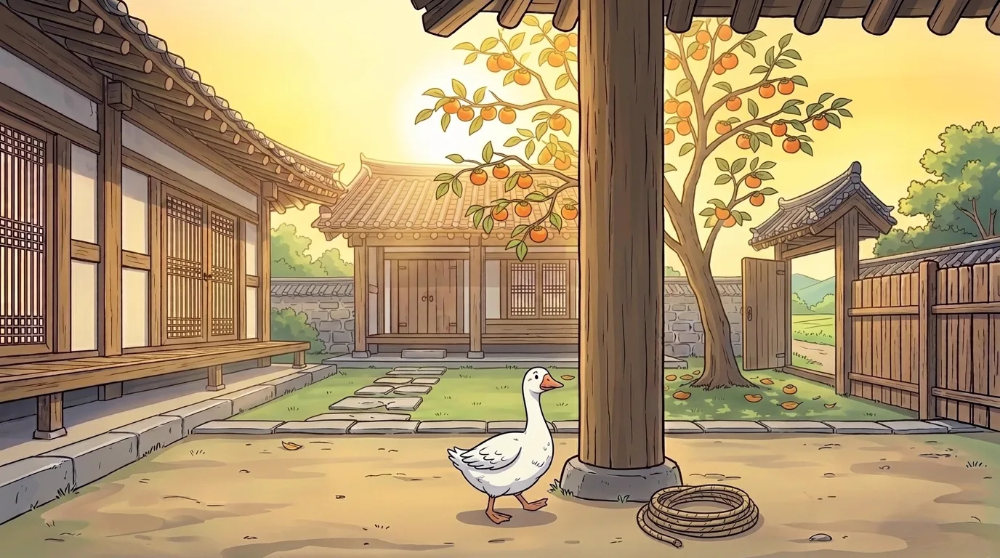
나그네는 자기가 억울한 것보다 거위의 목숨을 먼저 생각했습니다. 참는다는 것은 그냥 견디는 것이 아니라, 무엇을 지키려고 견디는지 아는 일입니다.
억울해도 참는 것이 나은 때가 있을까요? 그때 나는 무엇을 지키려는 걸까요?
이런 이야기는 듣는 아이가 다음에 무엇이 나올지 미리 맞혀 보게 만듭니다. 좁쌀 다음은 쥐, 쥐 다음은 고양이. 그 재미로 오래 전해진 것이지요.
이런 이야기는 듣기에 재미있어서 세계 곳곳에 있습니다. 짚 한 오라기로 시작해 부자가 되는 일본 이야기도 있고, 물물교환이 이어지는 서양 이야기도 있습니다.
소년이 한 일이라고는 제 것을 맡기고 그것이 없어졌다고 말한 것뿐입니다. 그러면 주인들이 미안해서 더 큰 것을 내주었지요.
그러니 소년을 키운 것은 좁쌀이 아니라 그것을 끝까지 제 것으로 여긴 마음입니다.
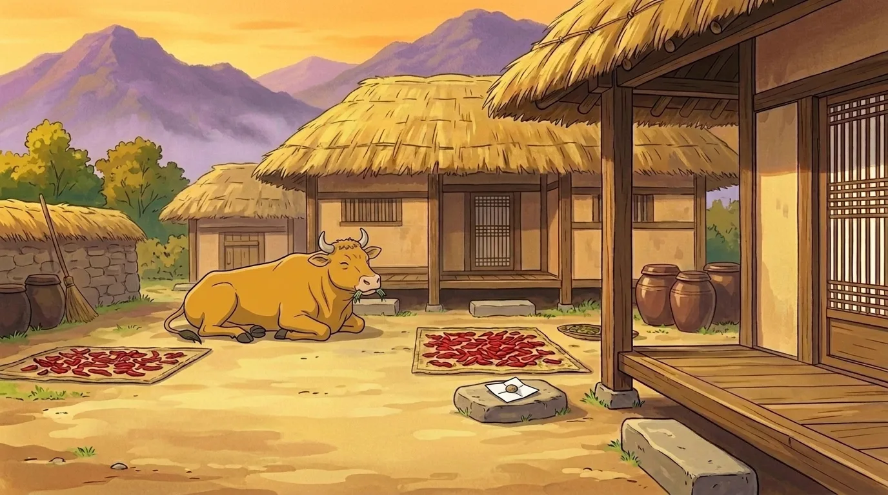
작다고 함부로 여기지 않는 마음이 좁쌀 한 톨을 황소로 만들었습니다. 소년은 한 번도 억지를 부리지 않았습니다. 그저 제 것을 끝까지 소중히 여겼을 뿐입니다.
지금 내 손에 있는 작은 것 가운데 소중히 여겨야 할 것은 무엇일까요?
이 이야기는 『삼국유사』에 실려 있습니다. 조신은 세달사라는 절의 스님으로, 절 땅을 돌보러 명주에 가 있다가 태수 김흔의 딸을 보았다고 적혀 있습니다.
꿈속에서 한평생을 살고 깨어나는 이야기를 꿈 이야기라 합니다. 우리 이야기 가운데 이것이 가장 오래된 것이고, 뒷날 『구운몽』이 이 틀을 그대로 이어받았습니다.
다시 보면 부처님은 조신의 소원을 물리치지 않았습니다. 들어주었습니다. 다만 꿈으로 들어주어 그 끝까지 보게 했습니다. 안 들어준 것보다 더 매서운 대답입니다.
꿈에서 깬 조신이 한 일도 눈여겨보십시오. 꿈속에서 아이를 묻은 자리를 찾아가 팝니다. 꿈인 줄 알면서도요. 거기서 돌부처가 나옵니다.
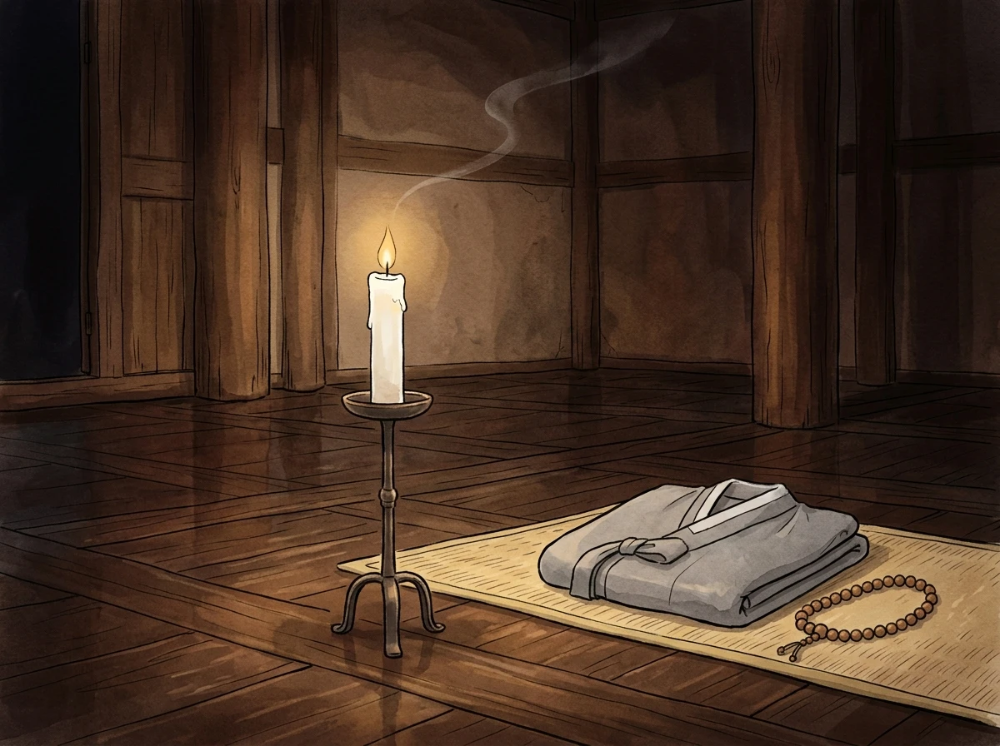
이 이야기는 소원을 갖지 말라고 하지 않습니다. 소원이 이루어진 다음까지 생각해 보라고 합니다. 조신은 사십 년을 살고 온 사람처럼 남은 삶을 살았습니다. 하룻밤이었는데도요.
지금 내가 바라는 것이 이루어지면, 그다음은 어떻게 될까요?
고려 때 엮은 책에도 이와 같은 이야기가 실려 있습니다. 그러니 적어도 팔백 년은 전해 온 이야기입니다. 그동안 그 자리를 지킨 것은 비석 하나와 땅 이름 하나였습니다.
지금도 그곳에는 개를 기리는 비석이 서 있습니다. 임실 오수면이 그 고을입니다.
다시 보면 누렁이는 처음에 짖었습니다. 짖어도 주인이 깨지 않자 그때부터 다른 일을 시작했습니다.
말이 통하지 않는다는 것을 알고 나서 몸으로 하는 쪽을 고른 것입니다. 개울과 풀밭을 몇 번이나 오갔는지는 아무도 모릅니다.
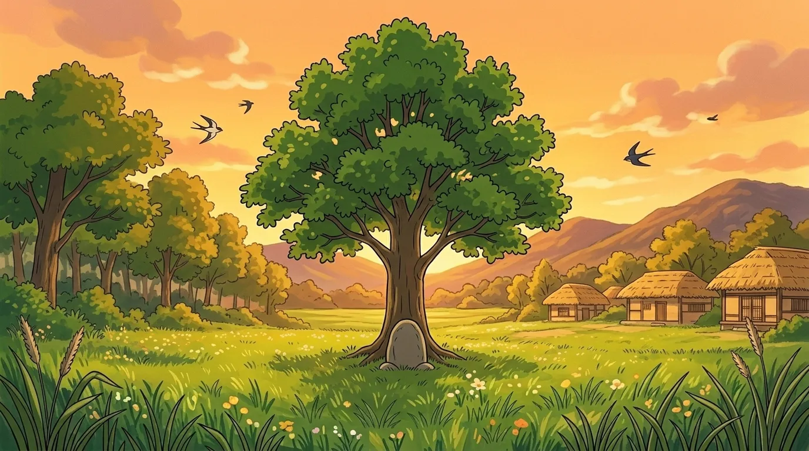
불이 젖은 풀 앞에서 힘을 잃은 대목이 이 이야기의 답입니다. 물을 뿌린 것이 아니라 몸에 묻혀 온 것입니다.
누렁이는 짖어도 소용없자 스스로 할 수 있는 일을 찾아냈습니다. 말이 통하지 않을 때에도 마음을 전하는 방법은 남아 있습니다.
말로 전할 수 없을 때 마음을 보여 준 적이 있나요?
글로만 전하는 것이 아닙니다. 광개토대왕비에도 주몽 이야기가 새겨져 있습니다. 천육백 년 된 돌에 나라를 연 사람의 이야기를 새겨 둔 것입니다.
주몽은 태어날 때부터 이름이 그것은 아니었습니다. 활 솜씨를 보고 사람들이 붙여 준 말이 그대로 이름이 된 것입니다.
좋은 말 하나만 일부러 여위게 만들고 나머지는 잘 먹여 살을 찌웠습니다. 그래서 왕이 고르고 남은 것을 얻었지요.
부러진 칼 반쪽을 아내에게 남긴 대목도 눈여겨볼 만합니다. 아들이 자란 뒤 아버지를 찾는 표시가 되었습니다.
주몽은 마구간으로 쫓겨났을 때 불평 대신 말을 살폈습니다. 가장 낮은 자리에 있는 동안 가장 좋은 말을 알아본 것입니다. 어디에 있느냐보다 그곳에서 무엇을 보고 있느냐가 다음 자리를 만듭니다.
하기 싫은 일을 맡았을 때 그 안에서 배울 만한 것은 무엇이 있을까요?
이 이야기는 인도에서 온 것으로 봅니다. 인도 옛이야기 모음에 쥐가 딸의 신랑감을 찾아 해와 구름과 바람과 산을 차례로 찾아가는 이야기가 있습니다.
그 이야기가 중국을 거쳐 우리 땅까지 왔습니다. 일본에도 같은 것이 있습니다. 아주 멀리까지 퍼진 이야기 틀입니다.
다시 보면 쥐 부부가 만난 것들은 모두 자기가 제일이 아니라고 말합니다. 해는 구름이 세다 하고, 구름은 바람이 세다 하고, 바람은 돌부처가 세다 합니다.
그런데 돌부처가 무섭다고 한 것은 쥐였습니다. 밑동을 갉아 대면 어쩔 도리가 없다는 것이지요.
그러니 이 이야기는 누가 가장 센가를 묻는 이야기가 아닙니다. 센 것은 언제나 상대에 따라 달라진다는 이야기입니다.
쥐 부부는 세상에서 가장 센 것을 찾아 해와 구름과 바람과 돌부처까지 만나고 왔습니다. 그런데 답은 처음부터 발밑에 있었습니다. 멀리서 찾을수록 가까운 것은 잘 보이지 않습니다.
멀리서 찾다가 사실은 가까이에 있던 것을 발견한 적이 있나요?
신라의 박혁거세, 고구려의 주몽과 나란히 놓이는 자리입니다. 세 나라가 저마다 첫 임금 이야기를 하나씩 갖고 있는 셈이지요.
여기에도 알이 나옵니다. 다만 하나가 아니라 여섯입니다. 여섯 알에서 나온 여섯이 각각 여섯 가야의 임금이 되었다고 합니다.
그 노래가 「구지가」라는 이름으로 지금까지 전합니다. 우리나라에 남아 있는 가장 오래된 노래 가운데 하나입니다.
김수로의 왕비가 멀리 바다 건너에서 왔다는 이야기도 함께 전해 옵니다. 그 시절 가야가 바다로 넓게 오갔다는 흔적이기도 합니다.
아홉 간은 저마다 제 마을이 제일이라 여기던 사람들이었습니다. 그런데 함께 노래하고 함께 발을 구른 다음에야 나라가 생겼습니다. 뭉치는 일은 늘 같이 무언가를 해 보는 데서 시작됩니다.
누군가와 처음으로 마음이 맞았던 순간은 언제였나요?
어려운 문제를 아이가 푸는 이야기는 세계 곳곳에 있습니다. 어른들이 다 막힌 자리에서 아이 하나가 답을 내는 틀입니다.
그런 이야기에서 아이가 쓰는 것은 힘도 아니고 학식도 아닙니다. 문제를 낸 사람이 정해 놓은 틀 밖에서 보는 것입니다.
다시 보면 재로 새끼를 꼬라는 문제는 풀 수 없는 문제입니다. 재는 손에 잡히지 않으니까요. 소년은 그 순서를 뒤집었습니다.
새끼를 먼저 꼬고 나서 태운 것입니다. 문제는 그대로인데 하는 차례를 바꾼 것이지요.
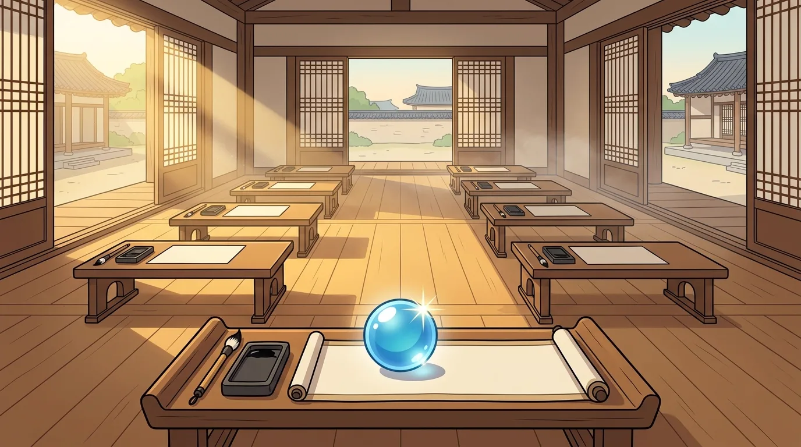
소년이 푼 세 문제는 힘으로도 재주로도 되지 않는 것이었습니다. 다만 다르게 생각했을 뿐입니다. 안 된다고 여기는 순간 길이 막히고, 다른 쪽에서 보는 순간 길이 열립니다.
안 된다고 여겼던 일을 다른 방법으로 풀어 본 적이 있나요?
이름이 곧 크기를 말해 줍니다. 한 발은 두 팔을 벌린 길이니, 꼬리만 해도 어른 다섯이 나란히 서야 하는 셈입니다. 이름을 부를 때마다 그 크기가 따라옵니다.
어머니를 찾아 먼 길을 떠나는 아이 이야기는 우리 옛이야기에 여럿 있습니다. 그 길에서 만난 사람들을 도와주고 그 대가로 필요한 것을 얻는 것이 짜임입니다.
괴물을 이긴 것은 힘이 아니라 그 멈춰 선 걸음들이 쌓인 것입니다.
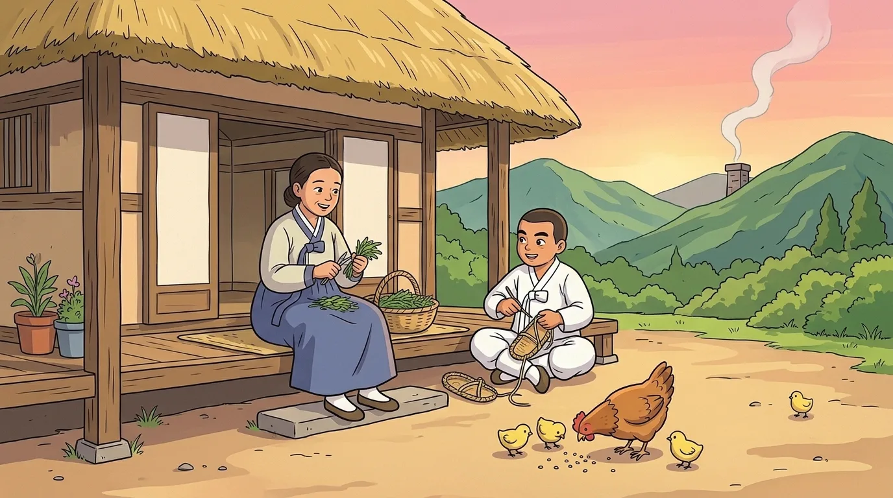
아들이 괴물을 이긴 것은 힘이 세서가 아니었습니다. 빨래를 밟아 주어 길을 얻었고 밭을 매 주어 무기를 얻었습니다. 서두르는 사람이 지나쳐 버린 자리에서 아들은 걸음을 멈추었습니다.
급한 일이 있을 때도 남을 도울 수 있을까요?
말 못 하는 것을 재판에 세우는 이야기는 우리 옛이야기에 여럿 있습니다. 원님이 돌이나 나무를 잡아다 곤장을 치겠다고 하는 식이지요.
그런데 그런 이야기에서 원님이 정말로 돌에게 묻는 것은 아닙니다. 구경하러 몰려든 사람들에게 묻는 것입니다.
다시 보면 이 이야기의 답은 돌이 아니라 웃음에 있습니다. 사람들이 웃자 그 웃음을 빌미로 벌을 내리고, 그 벌로 잃어버린 것을 되찾게 합니다.
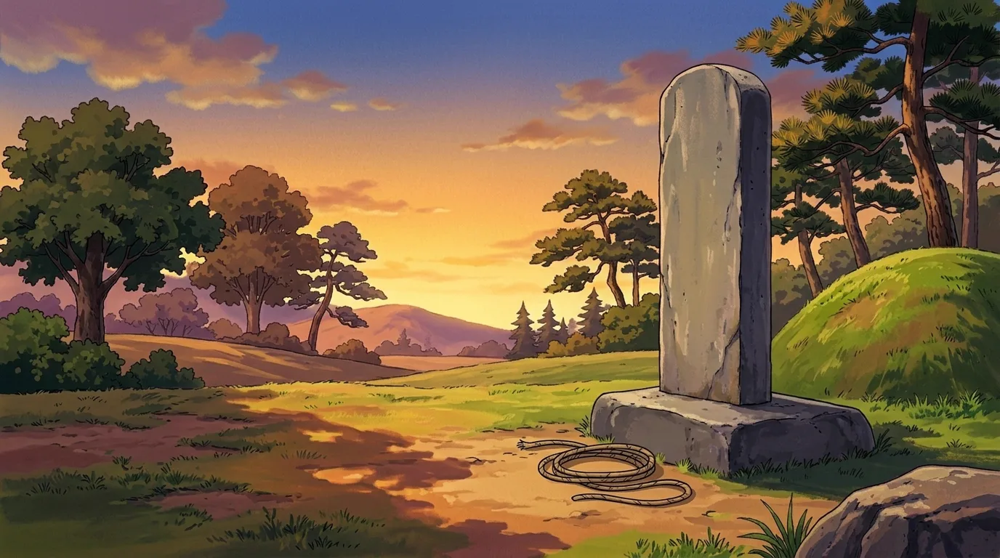
돌은 끝내 아무 말도 하지 않았습니다. 그러나 원님은 처음부터 돌에게 묻고 있지 않았습니다. 곧장 답이 없어 보이는 일에도 돌아가는 길이 있습니다.
곧장 풀리지 않는 문제를 다른 방법으로 풀어 본 적이 있나요?
탑에 그림자가 없다는 것은 사실이 아닙니다. 어떤 탑에도 그림자는 집니다. 그런데도 그림자 없는 탑이라 부르는 것은, 못에 비치기를 기다린 사람이 끝내 보지 못했기 때문입니다.
탑을 세운 이가 백제 땅에서 온 아사달이라는 사람이었고 그 아내가 아사녀였다는 이야기가 전해 옵니다. 다만 이 이야기가 옛 기록에 그대로 실려 있는 것은 아닙니다.
옛사람들은 이야기를 이렇게 땅에 붙여 두었습니다. 못 하나, 돌부처 하나가 남아 있으면 그 이야기도 함께 남습니다.
아사녀가 못가에서 본 것은 탑이 아니었습니다. 몇 해를 기다린 끝에 물에 비친 것은 결국 사람이었습니다. 기다림이 향하는 곳은 늘 물건이 아니라 사람입니다.
내가 오래 기다려 본 것은 무엇인가요?
이 이야기는 왜 그런지를 풀어 주는 이야기입니다. 넙치 눈이 왜 한쪽으로 몰렸는지, 메기 입이 왜 넓적한지를 한꺼번에 설명합니다.
바닷물고기의 생김새를 하나하나 이야기로 붙여 둔 셈입니다. 우리 옛이야기에는 이런 것이 아주 많습니다.
넙치 눈이 한쪽으로 몰린 것은 실제로도 그렇습니다. 다만 처음부터 그런 것은 아닙니다. 알에서 갓 깨어난 넙치는 여느 물고기처럼 눈이 양쪽에 하나씩 있고 똑바로 서서 헤엄칩니다. 그러다 한 달이 못 되어 오른쪽 눈이 머리를 돌아 왼쪽으로 옮겨 가고, 그때부터 바닥에 납작 엎드려 삽니다. 옛사람들이 궁금해한 그 일이 정말로 일어나는 셈입니다.
메기는 바닷물고기가 아닙니다. 냇물이나 저수지에 사는 민물고기지요. 그런데도 옛이야기는 메기를 바닷속 잔칫상에 앉혀 두었습니다. 이야기를 옮기던 사람들에게는 어느 물에 사는지보다 그 입이 왜 그렇게 넓적한지가 더 궁금했던 것이지요.
다시 보면 넙치는 잘못한 것이 없습니다. 꿈을 풀어 달라 해서 본 대로 풀었을 뿐입니다.
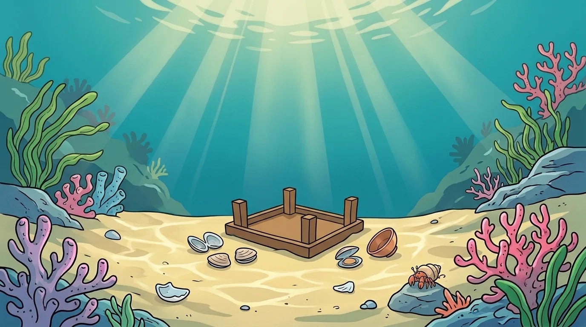
넙치는 본 대로 말했을 뿐인데 뺨을 맞았습니다. 듣기 싫은 말을 해 준 사람에게 화를 내면, 다음부터는 아무도 사실을 말해 주지 않습니다.
듣기 싫은 말을 해 준 사람에게 나는 어떻게 했나요?
누가 가장 나이가 많은지를 다투는 이야기는 우리나라에도 있고 이웃 나라에도 있습니다. 짐승들이 저마다 아득한 옛일을 들어 자랑하는 짜임이 같습니다.
이런 이야기가 웃긴 까닭은 아무도 확인할 수 없기 때문입니다. 하늘을 만들 때 있었다고 해도 아니라고 할 사람이 없습니다.
다시 보면 두꺼비는 다른 것들처럼 오랜 옛일을 대지 않았습니다. 대신 눈물을 흘렸습니다.
확인할 수 없는 자랑들 사이에서 확인할 수 없는 슬픔을 꺼낸 것이지요. 그 앞에서는 아무도 더 우길 수가 없었습니다.
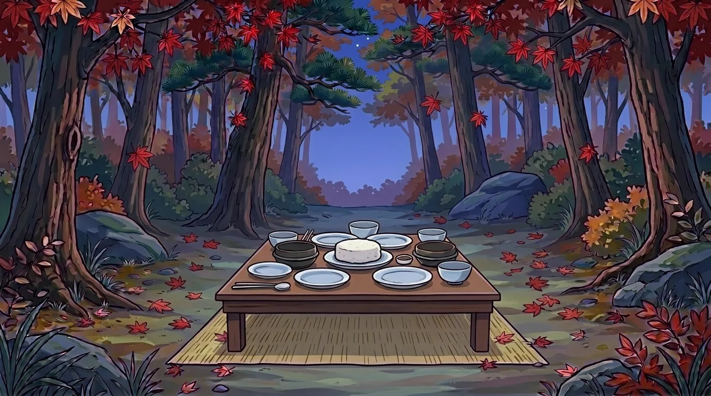
자랑은 부풀리기 쉽습니다. 여우도 사슴도 두꺼비도 정말 그랬는지는 아무도 확인할 수 없었습니다. 남보다 앞서려고 하는 말은 대개 그렇습니다.
나를 크게 보이려고 사실보다 부풀려 말한 적이 있나요?
이런 이야기에는 늘 옷이 나옵니다. 옷을 잃으면 돌아가지 못하고 옷을 되찾으면 돌아갑니다. 하늘 사람과 땅 사람을 가르는 것이 몸이 아니라 걸친 것 하나인 셈입니다.
우리 이야기는 끝이 여러 가지입니다. 선녀가 돌아가고 나무꾼이 두레박을 타고 하늘로 오르는 것도 있고, 끝내 만나지 못하는 것도 있습니다.
다른 이야기에서 나무꾼이 처음 하는 일은 날개옷을 감추는 것입니다. 도와준 것이 아니라 붙잡아 둔 것이지요.
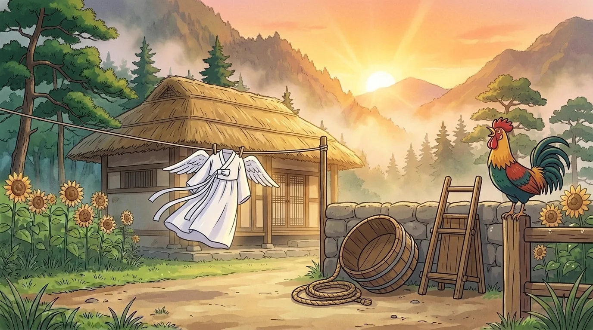
나무꾼은 날개옷을 감출 수도 있었습니다. 그랬다면 아내는 곁에 있어도 늘 떠날 궁리를 했을 것입니다. 돌려주었기 때문에 남는 쪽을 아내가 스스로 골랐습니다.
누군가를 붙잡아 두고 싶었던 적이 있나요? 그때 어떻게 하는 것이 좋았을까요?
온달은 지어낸 사람이 아닙니다. 『삼국사기』 열전에 이름이 올라 있는 고구려 장수입니다. 평강 공주도 그 기록에 함께 나옵니다.
다만 그 자리가 어디인지는 갈립니다. 단양의 온달산성이라는 말도 있고 서울 아차산성이라는 말도 있습니다. 싸움이 한강을 두고 벌어진 것이라 아차산성 쪽으로 보는 학자가 요즘은 더 많습니다.
임금이 어릴 적 농담으로 한 말을 공주가 그대로 지켰다는 데서 이야기가 시작됩니다. 말을 지킨 쪽은 어른이 아니라 아이였습니다.
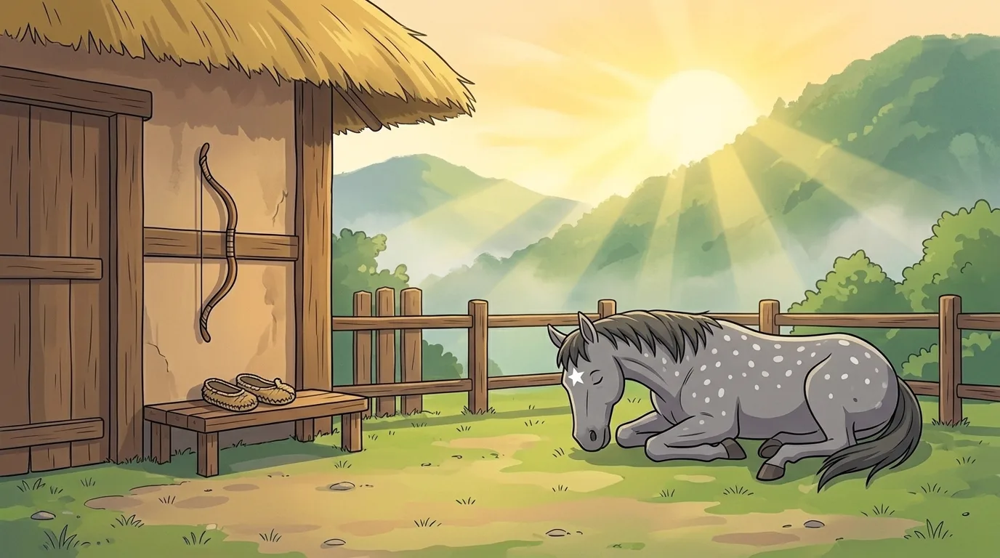
공주가 고른 것은 잘난 사람이 아니라 여윈 말과 놀림받던 사람이었습니다. 둘 다 원래 나쁘지 않았는데 아무도 먹여 주지 않았을 뿐입니다. 사람도 말도 알아봐 주는 이를 만나야 제 모습이 나옵니다.
누군가 나를 알아봐 준 적이 있나요? 나는 누구를 알아봐 줄 수 있을까요?
이 이야기의 도우미들을 한번 세어 보십시오. 밤, 자라, 개똥, 절구, 멍석, 지게. 하나같이 부엌과 마당에 있던 것들입니다.
칼을 든 장수도 없고 도술을 부리는 신선도 없습니다. 할머니가 날마다 쓰던 살림살이가 그대로 도우미가 된 것이지요.
다시 보면 그 가운데 혼자서 호랑이를 어쩔 수 있는 것은 하나도 없습니다. 밤 한 알이 무엇을 하겠습니까.
큰일이 큰 힘으로만 되는 것은 아닙니다. 저마다의 작은 몫이 차례로 놓이면 됩니다.
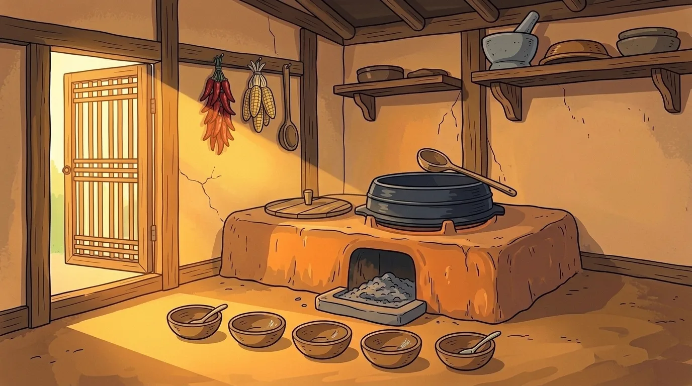
밤도 자라도 개똥도 혼자서는 호랑이를 어쩌지 못했습니다. 그런데 저마다 제가 있던 자리에서 할 수 있는 일을 하나씩 하자 호랑이가 물러갔습니다. 큰일은 큰 힘이 아니라 여럿의 작은 몫으로 되는 일이 많습니다.
여럿이 힘을 모아 해낸 일에서 내 몫은 무엇이었나요?
몸이 늘었다 줄었다 하는 이야기는 아이들이 유난히 좋아합니다. 일본에도 같은 이야기가 있습니다. 눈에 보이는 것이 대뜸 달라지는 것만큼 재미난 구경거리가 없기 때문이지요.
그런데 이런 이야기의 끝은 대개 같습니다. 그 물건을 얻은 사람은 오래 가지고 있지 못합니다. 물건이 사람을 시험하기 때문입니다.
김 첨지가 부채를 처음 얻은 자리도 다시 보십시오. 그것도 제 힘으로 만든 것이 아니었습니다.
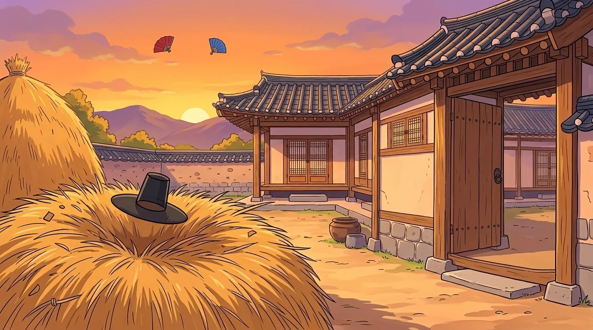
부자는 집을 주고 부채를 얻었고 김 첨지는 부채를 주고 집을 얻었습니다. 그런데 둘 다 남은 것이 없었습니다. 제 힘으로 얻지 않은 것은 손에 오래 머물지 않습니다.
내가 가진 것 가운데 내 힘으로 얻은 것은 무엇인가요?
이 이야기는 두 가지를 한꺼번에 합니다. 잃은 것을 되찾는 이야기이면서, 개와 고양이가 왜 사이가 나쁜지를 풀어 주는 이야기이기도 합니다.
물을 건널 때 고양이가 개 등에 업히는 대목이 어느 고장 이야기에나 나옵니다. 고양이는 물을 싫어하고 개는 헤엄을 칠 줄 알기 때문입니다.
이 이야기는 그 뒤로 개와 고양이가 서로 으르렁거리게 되었다고 끝을 맺습니다.
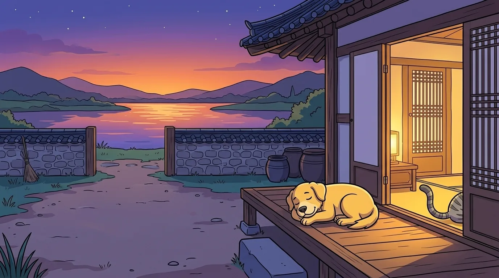
개도 고양이도 똑같이 애를 썼습니다. 그런데 마지막 한 걸음을 해낸 쪽만 방 안으로 들어갔습니다. 함께 한 일을 한 쪽의 공으로만 세면 남은 쪽의 마음에는 서운함이 남습니다.
여럿이 함께 해낸 일에서 나는 누구의 몫을 잊고 있었을까요?
이런 이야기에서 재주는 늘 셋이고, 마지막 하나는 늘 시시해 보입니다. 그래야 마지막에 뒤집을 수 있기 때문입니다. 이야기를 짓는 오래된 솜씨입니다.
그런 이야기에서 일이 되는 방식은 늘 같습니다. 셋 가운데 하나만 빠져도 되지 않습니다. 순서도 바꿀 수 없습니다.
셋째의 재주는 무엇이든 잘 받는 것이었습니다. 활을 쏘거나 힘을 쓰는 재주에 견주면 내세울 것이 없어 보입니다. 앞의 둘이 아무리 잘해도 받을 사람이 없으면 헛일인데도 그렇습니다.
형들은 셋째의 재주를 듣고 웃었습니다. 그런데 그날 아이를 받아 낸 것은 그 웃음거리였던 재주였습니다. 쓸모없어 보이는 재주는 아직 쓰일 자리를 만나지 못한 것일 뿐입니다.
남들이 대수롭지 않게 여기는, 내가 잘하는 일은 무엇인가요?
고개 이름에 얽힌 이야기는 우리나라 곳곳에 있습니다. 사람들이 자주 넘던 고개마다 이런 이야기가 하나씩 붙어 있었습니다.
삼년 고개라는 이름 자체가 무서움의 씨앗입니다. 넘어지면 삼 년밖에 못 산다는 말이 이름에 박혀 있으니, 그 고개를 넘는 사람마다 조심하게 됩니다.
다시 보면 아이가 한 일은 사실을 바꾼 것이 아닙니다. 한 번 넘어지면 삼 년이니 열 번 넘어지면 삼십 년이라고 셈을 바꾼 것뿐입니다.
같은 말인데 방향이 뒤집혔습니다. 무서운 규칙이 그대로 좋은 규칙이 되었지요.
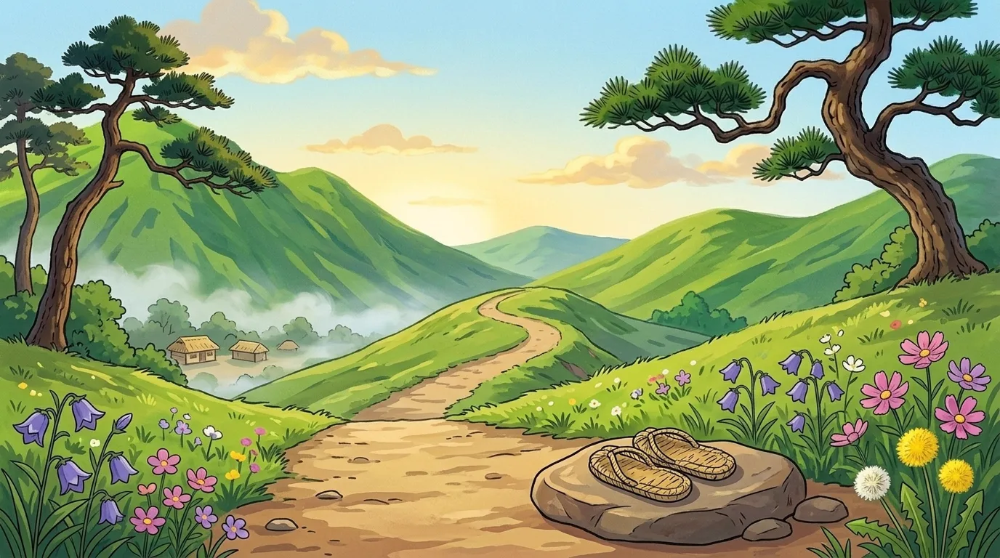
무서운 일이라고 믿으면 아무렇지 않은 일도 무서워집니다. 같은 일도 어떻게 보느냐에 따라 두려움이 되기도 하고 아무것도 아닌 일이 되기도 합니다.
걱정 때문에 아무것도 못 하고 있던 적이 있나요? 그 일을 다르게 볼 방법은 없을까요?
이 이야기는 『삼국유사』 무왕 편에 실려 있습니다. 백제 서른째 임금 무왕이 어릴 적에 마를 캐던 서동이었다고 적혀 있습니다. 정말 그런지는 학자들 사이에 말이 갈립니다.
서동요는 우리 글로 적혀 남은 노래 가운데 가장 오래된 것입니다. 한자를 빌려 우리말을 적은 향가라는 노래지요. 넉 줄짜리 짧은 노래입니다.
다시 보면 서동이 쓴 것은 힘도 돈도 아니고 노래였습니다. 아이들에게 마를 주고 노래를 퍼뜨렸습니다. 소문이 어떻게 사람을 움직이는지 아주 오래전 사람들이 이미 알고 있었던 셈입니다.
익산 미륵사 터에는 돌탑이 지금도 서 있습니다. 반쯤 무너져 있던 것을 2001년부터 2019년까지 걸려 다시 세웠습니다.
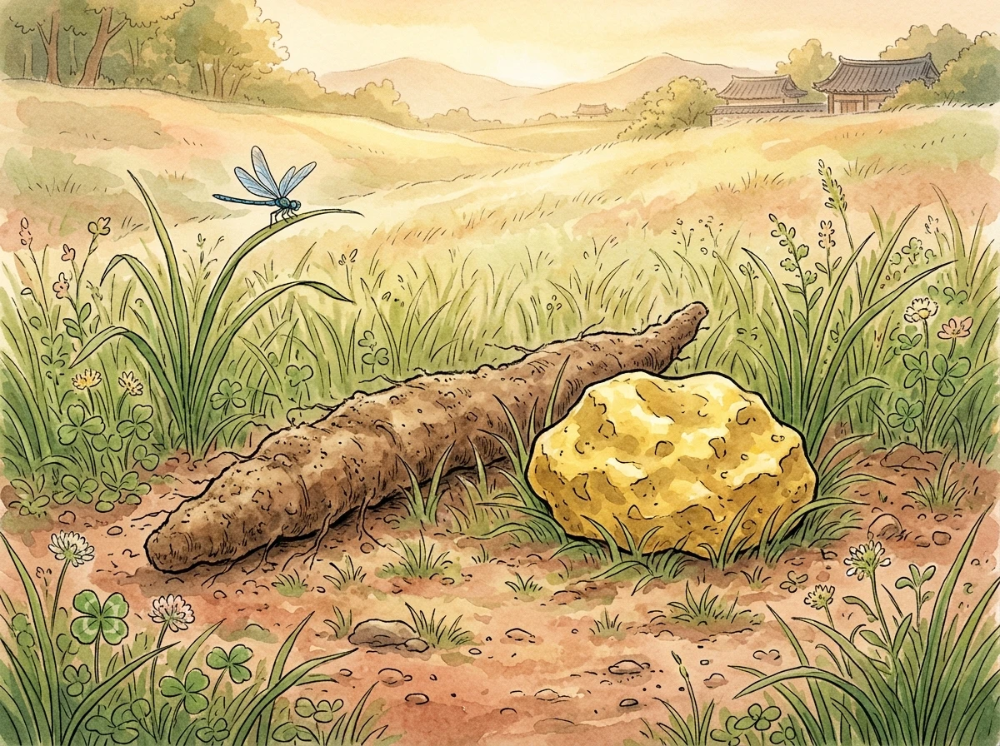
그런데 2009년, 탑을 뜯어 보다가 금판 하나가 나왔습니다. 절을 세운 사람이 선화공주가 아니라 백제 큰 집안의 딸 사택왕후라고 새겨져 있었지요. 학자들은 두 사람이 함께 나섰을 수도 있다고 봅니다.
공주는 노래 때문에 궁을 잃었고, 그 노래를 지은 사람과 살게 되었습니다. 이야기는 서동을 나무라지 않습니다. 대신 노래 하나에 딸을 내친 임금 쪽을 조용히 들여다보게 합니다.
소문 하나로 누군가를 잘못 본 적이 있나요?
석탈해도 『삼국유사』에 실린 사람입니다. 신라의 네 번째 임금이 되었는데, 신라 임금 가운데 박씨도 김씨도 아닌 석씨의 첫 사람입니다.
이 사람은 알에서 나와 궤에 담겨 바다를 떠왔다고 합니다. 밖에서 온 사람이 임금이 되는 이야기가 우리 옛 기록에 남아 있는 것이지요.
다시 보면 탈해가 호공의 집을 얻은 방법은 꾀입니다. 숫돌과 숯을 몰래 묻어 두고 대장장이 집안이라 우겼지요. 좋은 방법이라 하기는 어렵습니다.
탈해가 스스로 임금에게 나아가 숯을 묻은 일까지 다 아뢴 것도 그래서입니다. 이겨 놓고 돌려준 사람만이 할 수 있는 일이지요.
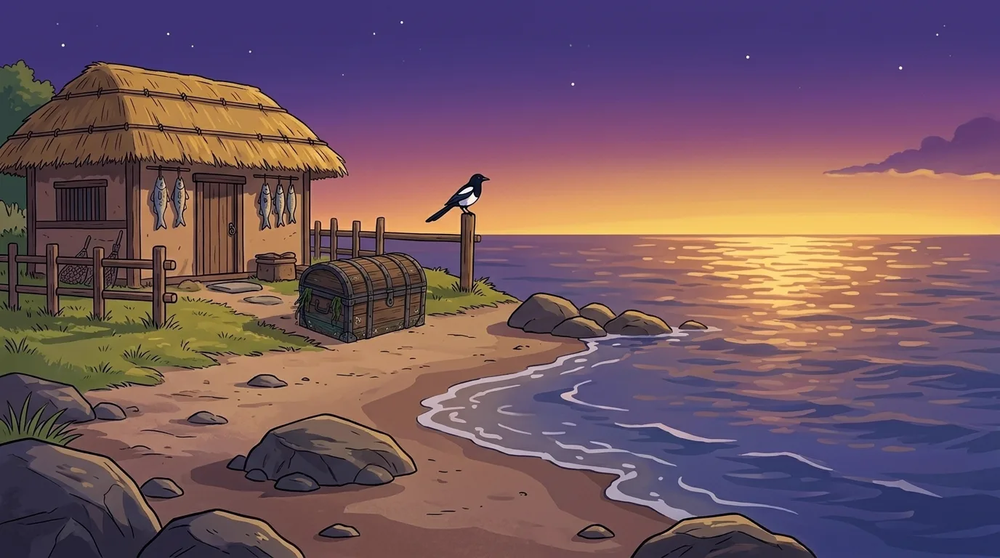
탈해는 꾀로 집을 얻었지만 그것을 갖지는 않았습니다. 이겨 놓고 돌려주었기 때문에 집 한 채 대신 사람 하나를 얻었습니다. 이기는 것보다 이긴 다음에 무엇을 하느냐가 더 오래 남습니다.
다투어 이겨 본 적이 있나요? 그다음에는 어떻게 했나요?
북유럽에서 전하는 이야기에서는 절구 대신 맷돌이 나옵니다. 그리고 그 맷돌은 지금도 바다 밑에서 돌고 있다고 합니다. 멈추는 말을 아는 이가 아직 없다는 뜻이지요.
서로 멀리 떨어진 곳에서 같은 이야기가 나온 것이 아니라, 아주 오래전부터 사람에게서 사람에게로 건너다닌 것으로 봅니다.
나무꾼은 절구를 얻고 나서 먼저 이웃에게 쌀을 나누었습니다. 같은 물건을 두고 두 사람이 처음 한 일이 달랐습니다.
쓰는 법을 다 알지 못하면서 손에 넣기만 하면 그 물건이 도리어 나를 삼킵니다. 도둑은 나오게 하는 말만 알았을 뿐 멈추는 말은 몰랐습니다.
잘 모르는 것을 서둘러 손에 넣으려다 곤란해진 적이 있나요?
구덩이에 빠진 짐승을 구해 주었다가 도리어 잡아먹힐 뻔하는 이야기는 세계에 널리 있습니다. 인도에도 있고 유럽에도 있습니다. 짐승만 바뀔 뿐 짜임이 같습니다.
그런 이야기의 끝도 대개 같습니다. 작고 꾀 많은 짐승이 나타나 처음부터 다시 해 보자고 합니다.
다시 보면 토끼는 한 번도 다투지 않았습니다. 옳고 그름을 따지지도 않았습니다. 다만 못 알아듣겠다고 했을 뿐입니다.
그러자 호랑이가 스스로 구덩이로 내려갔습니다. 토끼가 밀어 넣은 것이 아니라 제 발로 들어간 것이지요.
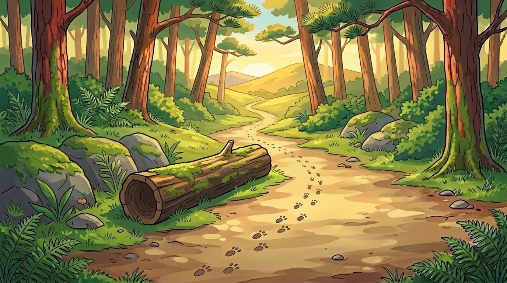
받은 은혜를 모른 척하는 이도 세상에는 있습니다. 힘으로 맞설 수 없을 때 토끼는 다투지 않았습니다. 대신 호랑이가 스스로 제자리로 돌아가게 만들었습니다.
억울한데 힘으로는 이길 수 없을 때 어떻게 하면 좋을까요?
이 이야기는 우리나라 국어 교과서에 오래 실려 온 이야기입니다. 짧고 군더더기가 없어서 옛이야기 가운데서도 손꼽히는 짜임을 지녔습니다.
충청도 예산에는 우애가 깊기로 이름난 형제를 기린 오래된 비석이 서 있습니다. 그 시절 사람들이 이런 형제를 얼마나 귀하게 여겼는지 알 수 있지요.
달밤에 마주친 대목에서 두 사람이 아무 말도 못 한 것도 그래서입니다. 할 말이 없어서가 아니라 이미 다 알아 버렸기 때문이지요.
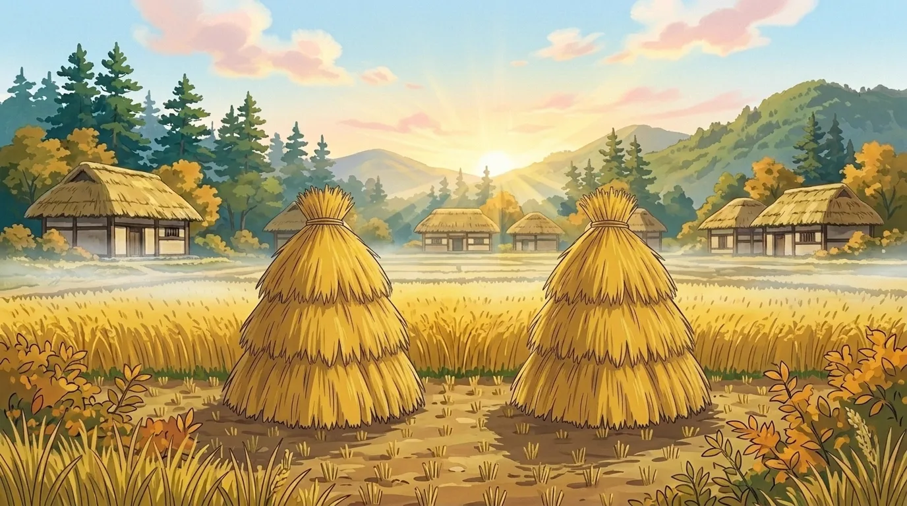
고마운 마음은 말보다 행동에 먼저 나타납니다. 두 형제는 사흘 동안 서로에게 한마디도 하지 않았지만 볏단은 밤마다 오갔습니다.
누군가를 위해 티 내지 않고 무언가를 해 준 적이 있나요?
우렁이나 조개에서 사람이 나와 살림을 해 주는 이야기는 우리나라 곳곳에 전해 옵니다. 일본에도 학이나 조개가 사람이 되는 비슷한 이야기가 있습니다.
그런 이야기에는 늘 지켜야 할 약속이 하나 붙습니다. 들여다보지 말라거나 며칠만 기다리라는 것입니다. 그리고 그 약속은 늘 깨집니다.
약속을 어긴 쪽이 벌을 받는 이야기가 아니라, 어긴 뒤에 무엇을 잃는지를 보여 주는 이야기입니다.
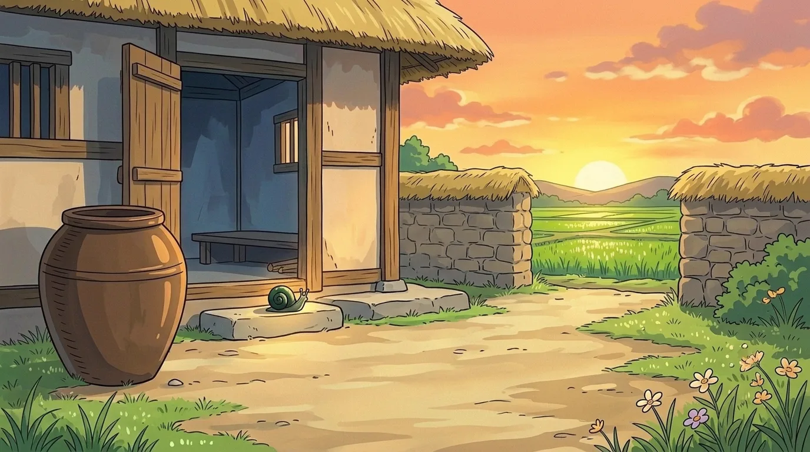
총각이 놓친 것은 사흘이라는 날수가 아니라 상대가 한 부탁이었습니다. 아끼는 마음이 클수록 조급해지기 쉽지만, 기다려 달라는 말을 들어주는 것도 아끼는 일입니다.
누군가 기다려 달라고 했을 때 나는 기다려 준 적이 있나요?
한겨울에 없는 것을 구해 오라는 심부름을 받는 이야기는 우리 옛이야기에 여럿 있습니다. 대개 새어머니가 시키고, 그 심부름 길에서 도와주는 이를 만납니다.
이 이야기는 거기에 봄을 얹었습니다. 버들 도령이 사는 곳은 한겨울에도 봄인 자리입니다. 겨울과 봄을 나란히 놓아 두 사람의 마음을 보여 준 것이지요.
연이가 받아 온 소쿠리에서 봄이 온 산으로 퍼져 나간 대목이 이 이야기의 답입니다.
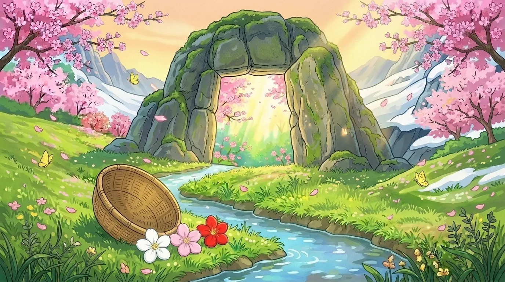
새어머니는 봄을 통째로 가지려다 하나도 얻지 못했습니다. 연이는 소쿠리 하나만 받아 왔는데 봄이 온 산으로 퍼져 나갔습니다. 나눠 받은 것과 빼앗은 것은 그렇게 다릅니다.
누군가 나에게 아무 대가 없이 내준 것이 있나요?
이 이야기는 『삼국유사』에 실려 있습니다. 신라 여덟째 임금 아달라 때 일로 적혀 있으니 우리 옛이야기 가운데 아주 오래된 축입니다.
일본에도 바다를 건너온 사람이 왕이 되었다는 이야기가 있습니다. 두 나라 사람들이 그 시절 바다를 얼마나 오갔는지 이 이야기가 보여 줍니다.
다시 보면 빛을 되찾은 것은 사람이 돌아와서가 아닙니다. 세오녀가 짠 비단이 대신 건너왔습니다. 옛사람들은 정성이 담긴 물건에 사람의 기운이 옮겨 간다고 여겼습니다.
영일이라는 땅 이름과 귀비고라는 창고 이름이 이야기와 함께 전해 옵니다. 지금의 포항 영일만입니다. 이름이 남으면 이야기도 남습니다.
연오랑과 세오녀는 해와 달의 기운을 지닌 사람들이었습니다. 그런데 두 사람은 그것을 알지 못한 채 미역을 따고 베를 짰습니다. 빛은 그렇게 가까이에 있습니다.
곁에 있어서 빛인 줄 몰랐던 사람이 있나요?
무엇이든 넣으면 두 개가 되어 나오는 그릇 이야기는 여러 나라에 있습니다. 그리고 그런 이야기의 끝은 늘 비슷합니다. 좋은 것만 늘어나지는 않습니다.
이 이야기가 고른 방법이 특히 매섭습니다. 늘어난 것이 재물이 아니라 사람이었습니다. 그것도 밥을 달라는 사람이었지요.
농부는 항아리를 잃고도 크게 아쉬워하지 않았습니다. 처음부터 밭에서 나온 것이었으니까요.
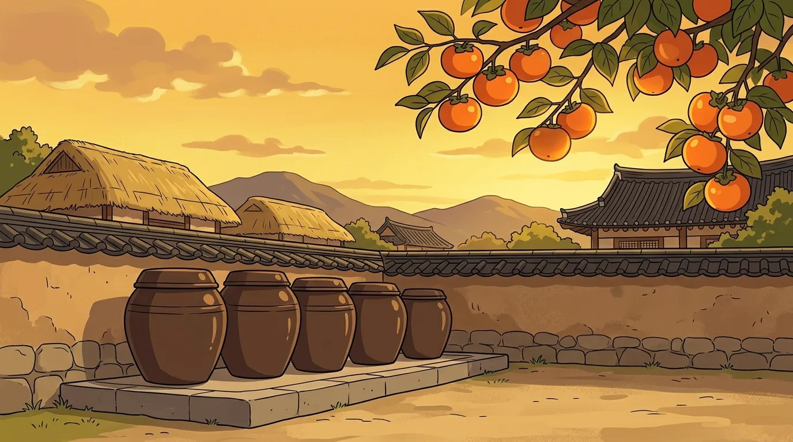
남의 것을 억지로 빼앗으면 그 안에 무엇이 들었는지도 모른 채 가져오게 됩니다. 부자가 손에 넣은 것은 재물이 아니라 감당할 수 없는 짐이었습니다.
가지고 싶은 것을 옳지 않은 방법으로 얻으려 한 적이 있나요?